discipline gender applications awards
1 Chemical sciences m 83 22
2 Chemical sciences f 39 10
3 Physical sciences m 135 26
4 Physical sciences f 39 9
5 Physics m 67 18
6 Physics f 9 2
7 Humanities m 230 33
8 Humanities f 166 32
9 Technical sciences m 189 30
10 Technical sciences f 62 13
11 Interdisciplinary m 105 12
12 Interdisciplinary f 78 17
13 Earth/life sciences m 156 38
14 Earth/life sciences f 126 18
15 Social sciences m 425 65
16 Social sciences f 409 47
17 Medical sciences m 245 46
18 Medical sciences f 260 29Statistical Rethinking: Week 6
Quick summary of the week
The week was a whirlwind tour of:
- Maximum entropy and introduction to GLMs.
- The problems that come when using link functions.
- The perils of relative effects when studying binomial regression and how complicated it is to directly calculate probabilities with GLMs: all the parameters interact among themselves.
This week was an introduction to GLMs and the principle of Maximum Entropy. Once we adventure outside the Gaussian, things start to become interesting. However, interesting can quickly devolve into chaotic and arbitrary modelling decisions. Against this, Richard started to introduce the principle of Maximum Entropy: when choosing how to approximate an unknown distribution, pick the most conservative distribution that satisfies your assumptions. This guiding principle works just as well for our likelihood choice, our prior choice and the resulting posterior distribution.
Also, once we work with likelihoods other than the normal, we must work with “link” functions: functions that link one of the likelihood’s parameters to a linear combination of our predictors. However, this change is not completely benign: prior setting now has become even more unnatural. Flat priors on the parameter space can now imply very different things in the outcome space. Thus, the heightened importance of prior predictive simulation.
Homework 6
These data have a very similar structure to the UCBAdmit data discussed in Chapter 11. I want you to consider a similar question: What are the total and indirect causal effects of gender on grant awards? Consider a mediation path (a pipe) through discipline. Draw the corresponding DAG and then use one or more binomial GLMs to answer the question.
Let’s start by writing the corresponding DAG:
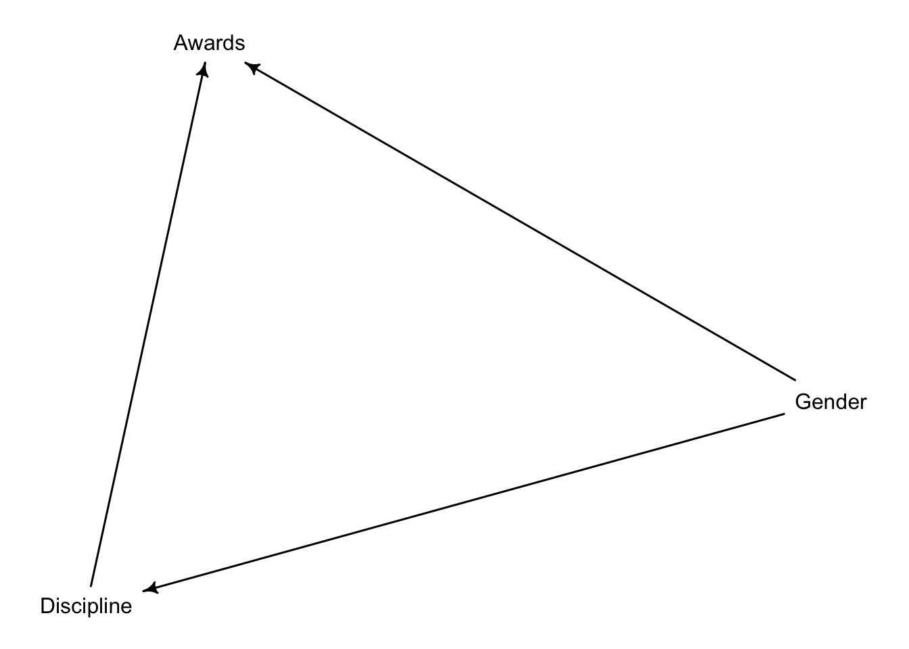
Therefore, to find out the total effect of Gender on awards we must keep the pipe open. That is, do not include Discipline on our analysis. Given that we are dealing with unorder count data, we will use a Binomial regression.
However, before we fit our statistical model, we will create index variables for both gender and discipline.
gender gender_int n
1 f 1 9
2 m 2 9 discipline discipline_int n
1 Chemical sciences 1 2
2 Earth/life sciences 2 2
3 Humanities 3 2
4 Interdisciplinary 4 2
5 Medical sciences 5 2
6 Physical sciences 6 2
7 Physics 7 2
8 Social sciences 8 2
9 Technical sciences 9 2Before setting the prior, we know that getting grants is difficult. So we should expect the probability to be pretty low for both genders. A log-odds of 0 is a probability of 1/2. Thus, zero is too large for being the center of our prior.
[1] 0.5[1] 0.2689414A quarter of a probability seems more plausible.
Running MCMC with 4 parallel chains, with 1 thread(s) per chain...
Chain 1 Iteration: 1 / 1000 [ 0%] (Warmup)
Chain 1 Iteration: 100 / 1000 [ 10%] (Warmup)
Chain 1 Iteration: 200 / 1000 [ 20%] (Warmup)
Chain 1 Iteration: 300 / 1000 [ 30%] (Warmup)
Chain 1 Iteration: 400 / 1000 [ 40%] (Warmup)
Chain 1 Iteration: 500 / 1000 [ 50%] (Warmup)
Chain 1 Iteration: 501 / 1000 [ 50%] (Sampling)
Chain 1 Iteration: 600 / 1000 [ 60%] (Sampling)
Chain 1 Iteration: 700 / 1000 [ 70%] (Sampling)
Chain 1 Iteration: 800 / 1000 [ 80%] (Sampling)
Chain 1 Iteration: 900 / 1000 [ 90%] (Sampling)
Chain 1 Iteration: 1000 / 1000 [100%] (Sampling)
Chain 2 Iteration: 1 / 1000 [ 0%] (Warmup)
Chain 2 Iteration: 100 / 1000 [ 10%] (Warmup)
Chain 2 Iteration: 200 / 1000 [ 20%] (Warmup)
Chain 2 Iteration: 300 / 1000 [ 30%] (Warmup)
Chain 2 Iteration: 400 / 1000 [ 40%] (Warmup)
Chain 2 Iteration: 500 / 1000 [ 50%] (Warmup)
Chain 2 Iteration: 501 / 1000 [ 50%] (Sampling)
Chain 2 Iteration: 600 / 1000 [ 60%] (Sampling)
Chain 2 Iteration: 700 / 1000 [ 70%] (Sampling)
Chain 2 Iteration: 800 / 1000 [ 80%] (Sampling)
Chain 2 Iteration: 900 / 1000 [ 90%] (Sampling)
Chain 2 Iteration: 1000 / 1000 [100%] (Sampling)
Chain 3 Iteration: 1 / 1000 [ 0%] (Warmup)
Chain 3 Iteration: 100 / 1000 [ 10%] (Warmup)
Chain 3 Iteration: 200 / 1000 [ 20%] (Warmup)
Chain 3 Iteration: 300 / 1000 [ 30%] (Warmup)
Chain 3 Iteration: 400 / 1000 [ 40%] (Warmup)
Chain 3 Iteration: 500 / 1000 [ 50%] (Warmup)
Chain 3 Iteration: 501 / 1000 [ 50%] (Sampling)
Chain 3 Iteration: 600 / 1000 [ 60%] (Sampling)
Chain 3 Iteration: 700 / 1000 [ 70%] (Sampling)
Chain 3 Iteration: 800 / 1000 [ 80%] (Sampling)
Chain 3 Iteration: 900 / 1000 [ 90%] (Sampling)
Chain 3 Iteration: 1000 / 1000 [100%] (Sampling)
Chain 4 Iteration: 1 / 1000 [ 0%] (Warmup)
Chain 4 Iteration: 100 / 1000 [ 10%] (Warmup)
Chain 4 Iteration: 200 / 1000 [ 20%] (Warmup)
Chain 4 Iteration: 300 / 1000 [ 30%] (Warmup)
Chain 4 Iteration: 400 / 1000 [ 40%] (Warmup)
Chain 4 Iteration: 500 / 1000 [ 50%] (Warmup)
Chain 4 Iteration: 501 / 1000 [ 50%] (Sampling)
Chain 4 Iteration: 600 / 1000 [ 60%] (Sampling)
Chain 4 Iteration: 700 / 1000 [ 70%] (Sampling)
Chain 4 Iteration: 800 / 1000 [ 80%] (Sampling)
Chain 4 Iteration: 900 / 1000 [ 90%] (Sampling)
Chain 4 Iteration: 1000 / 1000 [100%] (Sampling)
Chain 1 finished in 0.0 seconds.
Chain 2 finished in 0.1 seconds.
Chain 3 finished in 0.0 seconds.
Chain 4 finished in 0.0 seconds.
All 4 chains finished successfully.
Mean chain execution time: 0.0 seconds.
Total execution time: 0.5 seconds.Before we venture into finding out our chains’ health, let’s do some prior predictive simulation.
Running MCMC with 1 chain, with 1 thread(s) per chain...
Chain 1 Iteration: 1 / 2000 [ 0%] (Warmup)
Chain 1 Iteration: 100 / 2000 [ 5%] (Warmup)
Chain 1 Iteration: 200 / 2000 [ 10%] (Warmup)
Chain 1 Iteration: 300 / 2000 [ 15%] (Warmup)
Chain 1 Iteration: 400 / 2000 [ 20%] (Warmup)
Chain 1 Iteration: 500 / 2000 [ 25%] (Warmup)
Chain 1 Iteration: 600 / 2000 [ 30%] (Warmup)
Chain 1 Iteration: 700 / 2000 [ 35%] (Warmup)
Chain 1 Iteration: 800 / 2000 [ 40%] (Warmup)
Chain 1 Iteration: 900 / 2000 [ 45%] (Warmup)
Chain 1 Iteration: 1000 / 2000 [ 50%] (Warmup)
Chain 1 Iteration: 1001 / 2000 [ 50%] (Sampling)
Chain 1 Iteration: 1100 / 2000 [ 55%] (Sampling)
Chain 1 Iteration: 1200 / 2000 [ 60%] (Sampling)
Chain 1 Iteration: 1300 / 2000 [ 65%] (Sampling)
Chain 1 Iteration: 1400 / 2000 [ 70%] (Sampling)
Chain 1 Iteration: 1500 / 2000 [ 75%] (Sampling)
Chain 1 Iteration: 1600 / 2000 [ 80%] (Sampling)
Chain 1 Iteration: 1700 / 2000 [ 85%] (Sampling)
Chain 1 Iteration: 1800 / 2000 [ 90%] (Sampling)
Chain 1 Iteration: 1900 / 2000 [ 95%] (Sampling)
Chain 1 Iteration: 2000 / 2000 [100%] (Sampling)
Chain 1 finished in 0.0 seconds.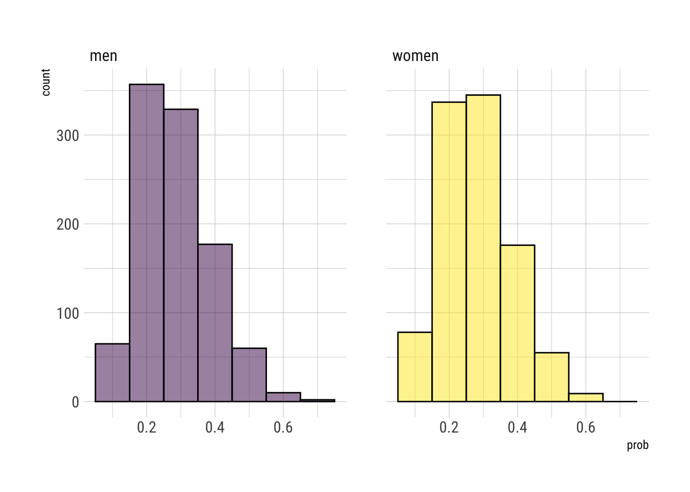
Which are very mildly regularizing priors after all. Let’s check our chains’ health:
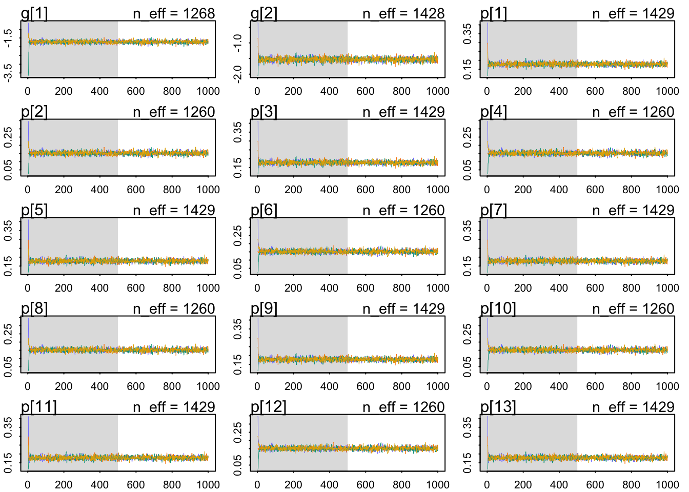
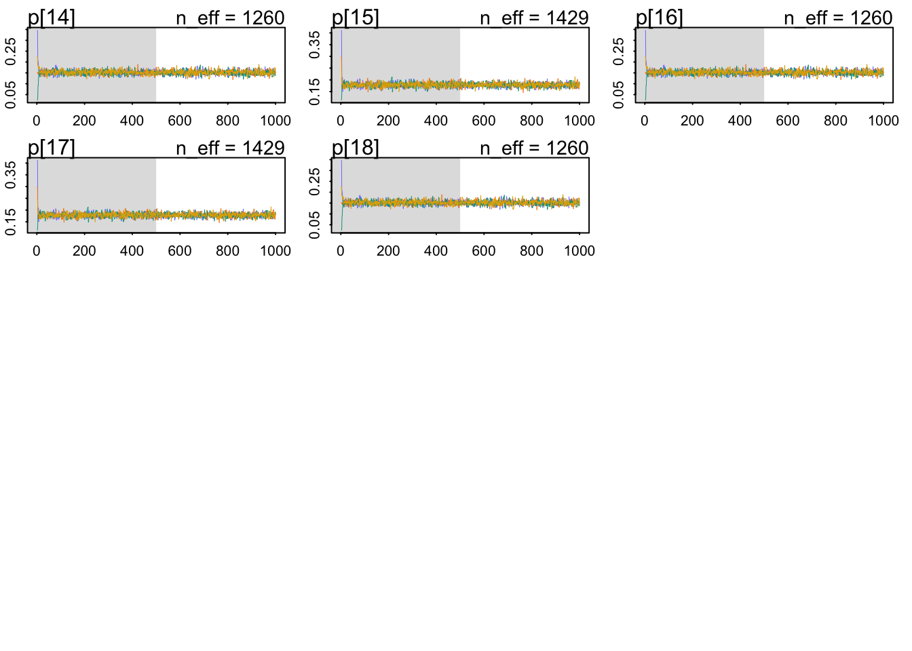
The chains look healthy because:
- They are stationary.
- They mix well.
- Different chains converge to explore same regions of the parameter space.
mean sd 5.5% 94.5% n_eff Rhat4
g[1] -1.726559 0.08193524 -1.853391 -1.592376 1267.740 1.0018245
g[2] -1.529378 0.06271755 -1.631909 -1.429660 1427.682 0.9997384The Rhat looks OK, too. The parameters seem to be pretty accurately estimated, given their absolute value compare to their standard deviation. Both are negative, reflecting that getting a grant is difficult.
For the men, the average probability seems to be around:
Average probability of getting a grant across disciplines for men is between: 0.16 and 0.19For the women:
Average probability for men is between: 0.13 and 0.17Let’s compute statistical inference on this difference. The relative effect of being a man:
mean sd 5.5% 94.5% histogram
diff_log_odds 0.19718116 0.10220652 0.033756350 0.3572811 ▁▁▁▂▃▅▇▇▅▃▂▁▁▁
diff_probability 0.02694168 0.01383279 0.004597959 0.0488329 ▁▁▂▅▇▇▃▁▁▁On the log odds scale, that is, in the relative scale, we estimate that on average, across disciplines, the effect is positive. On the probability scale, that is, in the absolute scale, we estimate the difference to be around 1% and 5%.
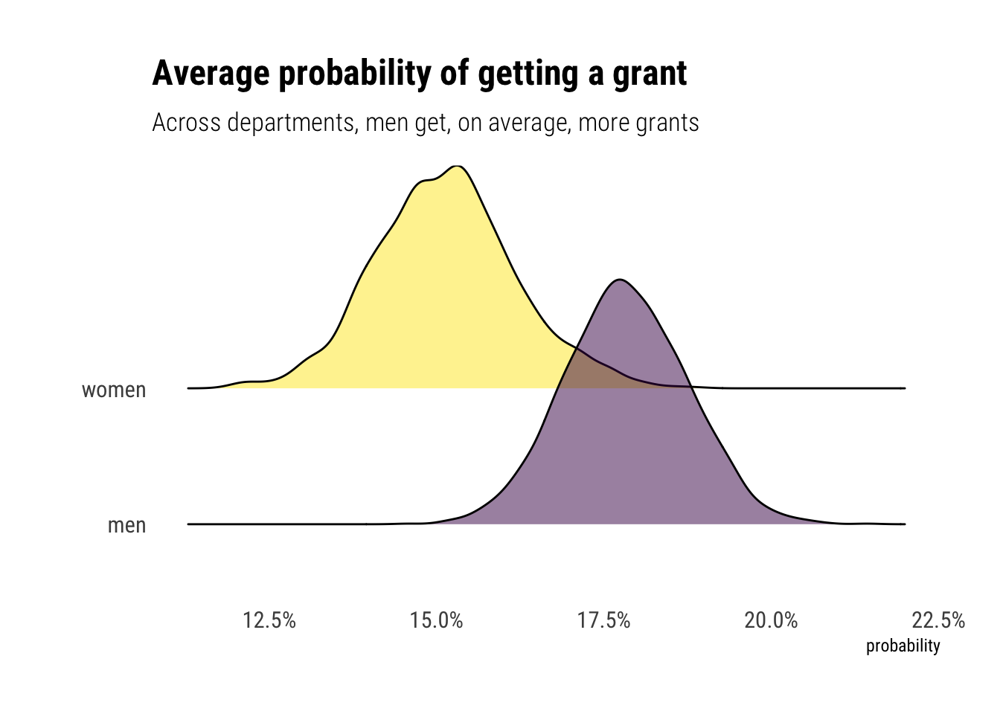
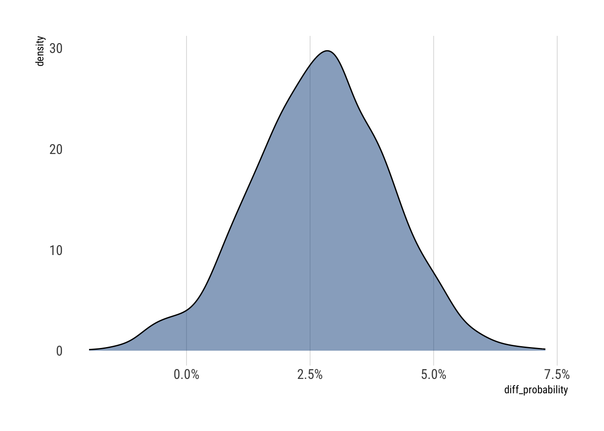
Posterior predictions
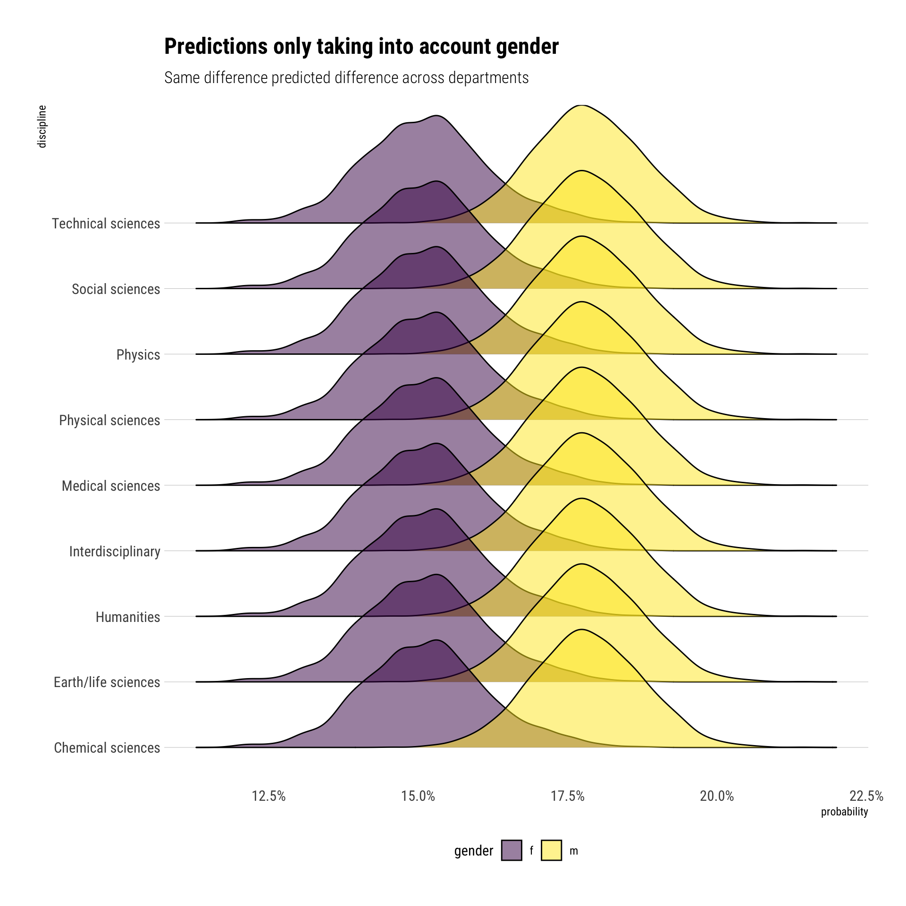
However, this models helps us answer what is the total effect of gender on grants by answering the statistical question of what is the average probability of getting a grant across.
Conditional on our DAG, if we want to get the direct effect of gender on grants, we must adjust for the discipline to which the scholars belong to. That is, we must ask a different statistical question: within discipines, what is the average grant assignment for men and women?
Running MCMC with 4 parallel chains, with 1 thread(s) per chain...
Chain 1 Iteration: 1 / 1000 [ 0%] (Warmup)
Chain 1 Iteration: 100 / 1000 [ 10%] (Warmup)
Chain 1 Iteration: 200 / 1000 [ 20%] (Warmup)
Chain 1 Iteration: 300 / 1000 [ 30%] (Warmup)
Chain 1 Iteration: 400 / 1000 [ 40%] (Warmup)
Chain 1 Iteration: 500 / 1000 [ 50%] (Warmup)
Chain 1 Iteration: 501 / 1000 [ 50%] (Sampling)
Chain 1 Iteration: 600 / 1000 [ 60%] (Sampling)
Chain 1 Iteration: 700 / 1000 [ 70%] (Sampling)
Chain 1 Iteration: 800 / 1000 [ 80%] (Sampling)
Chain 1 Iteration: 900 / 1000 [ 90%] (Sampling)
Chain 1 Iteration: 1000 / 1000 [100%] (Sampling)
Chain 2 Iteration: 1 / 1000 [ 0%] (Warmup)
Chain 2 Iteration: 100 / 1000 [ 10%] (Warmup)
Chain 2 Iteration: 200 / 1000 [ 20%] (Warmup)
Chain 2 Iteration: 300 / 1000 [ 30%] (Warmup)
Chain 2 Iteration: 400 / 1000 [ 40%] (Warmup)
Chain 2 Iteration: 500 / 1000 [ 50%] (Warmup)
Chain 2 Iteration: 501 / 1000 [ 50%] (Sampling)
Chain 2 Iteration: 600 / 1000 [ 60%] (Sampling)
Chain 2 Iteration: 700 / 1000 [ 70%] (Sampling)
Chain 2 Iteration: 800 / 1000 [ 80%] (Sampling)
Chain 2 Iteration: 900 / 1000 [ 90%] (Sampling)
Chain 2 Iteration: 1000 / 1000 [100%] (Sampling)
Chain 3 Iteration: 1 / 1000 [ 0%] (Warmup)
Chain 3 Iteration: 100 / 1000 [ 10%] (Warmup)
Chain 3 Iteration: 200 / 1000 [ 20%] (Warmup)
Chain 3 Iteration: 300 / 1000 [ 30%] (Warmup)
Chain 3 Iteration: 400 / 1000 [ 40%] (Warmup)
Chain 3 Iteration: 500 / 1000 [ 50%] (Warmup)
Chain 3 Iteration: 501 / 1000 [ 50%] (Sampling)
Chain 3 Iteration: 600 / 1000 [ 60%] (Sampling)
Chain 3 Iteration: 700 / 1000 [ 70%] (Sampling)
Chain 3 Iteration: 800 / 1000 [ 80%] (Sampling)
Chain 3 Iteration: 900 / 1000 [ 90%] (Sampling)
Chain 3 Iteration: 1000 / 1000 [100%] (Sampling)
Chain 4 Iteration: 1 / 1000 [ 0%] (Warmup)
Chain 4 Iteration: 100 / 1000 [ 10%] (Warmup)
Chain 4 Iteration: 200 / 1000 [ 20%] (Warmup)
Chain 4 Iteration: 300 / 1000 [ 30%] (Warmup)
Chain 4 Iteration: 400 / 1000 [ 40%] (Warmup)
Chain 4 Iteration: 500 / 1000 [ 50%] (Warmup)
Chain 4 Iteration: 501 / 1000 [ 50%] (Sampling)
Chain 4 Iteration: 600 / 1000 [ 60%] (Sampling)
Chain 4 Iteration: 700 / 1000 [ 70%] (Sampling)
Chain 4 Iteration: 800 / 1000 [ 80%] (Sampling)
Chain 4 Iteration: 900 / 1000 [ 90%] (Sampling)
Chain 4 Iteration: 1000 / 1000 [100%] (Sampling)
Chain 1 finished in 0.1 seconds.
Chain 2 finished in 0.1 seconds.
Chain 3 finished in 0.1 seconds.
Chain 4 finished in 0.1 seconds.
All 4 chains finished successfully.
Mean chain execution time: 0.1 seconds.
Total execution time: 0.3 seconds.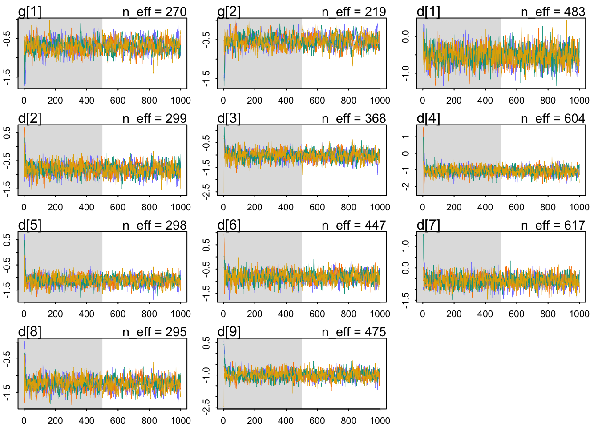
The chains seem to be healthy:
- They are stationary.
- They mix well.
- Different chains converge well.
Let’s fit a single long chain.
Running MCMC with 1 chain, with 1 thread(s) per chain...
Chain 1 Iteration: 1 / 4000 [ 0%] (Warmup)
Chain 1 Iteration: 100 / 4000 [ 2%] (Warmup)
Chain 1 Iteration: 200 / 4000 [ 5%] (Warmup)
Chain 1 Iteration: 300 / 4000 [ 7%] (Warmup)
Chain 1 Iteration: 400 / 4000 [ 10%] (Warmup)
Chain 1 Iteration: 500 / 4000 [ 12%] (Warmup)
Chain 1 Iteration: 600 / 4000 [ 15%] (Warmup)
Chain 1 Iteration: 700 / 4000 [ 17%] (Warmup)
Chain 1 Iteration: 800 / 4000 [ 20%] (Warmup)
Chain 1 Iteration: 900 / 4000 [ 22%] (Warmup)
Chain 1 Iteration: 1000 / 4000 [ 25%] (Warmup)
Chain 1 Iteration: 1100 / 4000 [ 27%] (Warmup)
Chain 1 Iteration: 1200 / 4000 [ 30%] (Warmup)
Chain 1 Iteration: 1300 / 4000 [ 32%] (Warmup)
Chain 1 Iteration: 1400 / 4000 [ 35%] (Warmup)
Chain 1 Iteration: 1500 / 4000 [ 37%] (Warmup)
Chain 1 Iteration: 1600 / 4000 [ 40%] (Warmup)
Chain 1 Iteration: 1700 / 4000 [ 42%] (Warmup)
Chain 1 Iteration: 1800 / 4000 [ 45%] (Warmup)
Chain 1 Iteration: 1900 / 4000 [ 47%] (Warmup)
Chain 1 Iteration: 2000 / 4000 [ 50%] (Warmup)
Chain 1 Iteration: 2001 / 4000 [ 50%] (Sampling)
Chain 1 Iteration: 2100 / 4000 [ 52%] (Sampling)
Chain 1 Iteration: 2200 / 4000 [ 55%] (Sampling)
Chain 1 Iteration: 2300 / 4000 [ 57%] (Sampling)
Chain 1 Iteration: 2400 / 4000 [ 60%] (Sampling)
Chain 1 Iteration: 2500 / 4000 [ 62%] (Sampling)
Chain 1 Iteration: 2600 / 4000 [ 65%] (Sampling)
Chain 1 Iteration: 2700 / 4000 [ 67%] (Sampling)
Chain 1 Iteration: 2800 / 4000 [ 70%] (Sampling)
Chain 1 Iteration: 2900 / 4000 [ 72%] (Sampling)
Chain 1 Iteration: 3000 / 4000 [ 75%] (Sampling)
Chain 1 Iteration: 3100 / 4000 [ 77%] (Sampling)
Chain 1 Iteration: 3200 / 4000 [ 80%] (Sampling)
Chain 1 Iteration: 3300 / 4000 [ 82%] (Sampling)
Chain 1 Iteration: 3400 / 4000 [ 85%] (Sampling)
Chain 1 Iteration: 3500 / 4000 [ 87%] (Sampling)
Chain 1 Iteration: 3600 / 4000 [ 90%] (Sampling)
Chain 1 Iteration: 3700 / 4000 [ 92%] (Sampling)
Chain 1 Iteration: 3800 / 4000 [ 95%] (Sampling)
Chain 1 Iteration: 3900 / 4000 [ 97%] (Sampling)
Chain 1 Iteration: 4000 / 4000 [100%] (Sampling)
Chain 1 finished in 0.3 seconds. mean sd 5.5% 94.5% n_eff Rhat4
g[1] -0.6917646 0.1712243 -0.9685794 -0.4198413 468.5596 1.0003605
g[2] -0.5433700 0.1614290 -0.8033075 -0.2911890 428.5772 0.9998649
d[1] -0.5345053 0.2367730 -0.9240730 -0.1570969 828.8811 1.0002828
d[2] -0.8106297 0.2090504 -1.1513516 -0.4722240 604.9735 0.9995131
d[3] -1.0316070 0.1973300 -1.3539111 -0.7074005 595.0431 0.9996754
d[4] -1.0674090 0.2302974 -1.4420317 -0.6807685 816.7345 0.9998054
d[5] -1.1268116 0.1901408 -1.4227910 -0.8209012 561.1217 0.9998611
d[6] -0.8316702 0.2206251 -1.1789399 -0.4739253 747.6443 0.9998957
d[7] -0.5966858 0.2669562 -1.0279350 -0.1775297 879.7959 1.0002679
d[8] -1.2460656 0.1799261 -1.5312353 -0.9668919 524.0918 1.0008232
d[9] -1.0041924 0.2136897 -1.3537964 -0.6724457 629.1481 1.0014307The Rhat seems to be ok. Also, men’s parameter seems to still be larger than the women’s parameters.
mean sd 5.5% 94.5% histogram
diff_log_odds 0.1483946 0.106863 -0.01813196 0.3170597 ▁▁▁▅▇▅▁▁▁Now, the difference, as measured on the log scale, the relative effect, seems to have decreased. However, within departments, men still seem to have a higher chance of receiving a grant.
However, we cannot directly calculate the difference in the absolute scale as readily as we did before. Why? The floor and ceiling effects that Richard discussed in class. That is, the departments influence the difference between genders; the differents base rates of acceptance among departments influence our prediction.
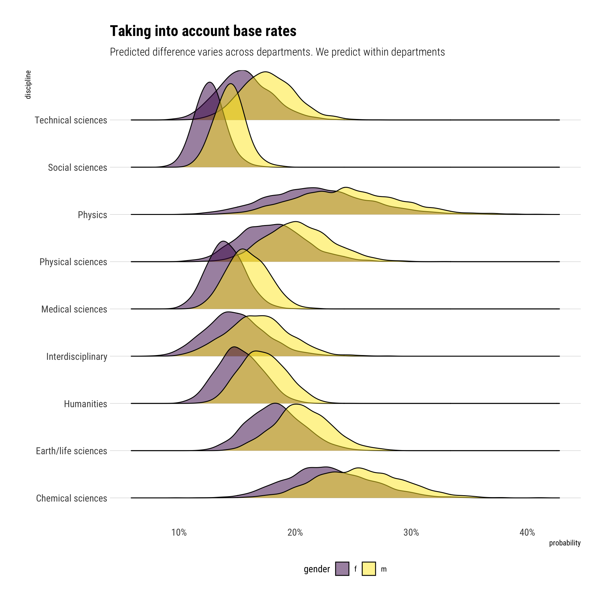
In comparison to our earlier predictions, the predicted difference is, in general, much lower. Let’s compare our models:
PSIS SE dPSIS dSE pPSIS weight
model_only_gender 130.4475 9.669158 0.000000 NA 5.130467 0.6277665
model_discipline 131.4928 8.728316 1.045294 9.536532 14.111772 0.3722335 WAIC SE dWAIC dSE pWAIC weight
model_discipline 126.272 7.789795 0.000000 NA 11.501352 0.8617014
model_only_gender 129.931 9.176973 3.658987 9.072812 4.872187 0.1382986Somewhat surprisingly, the PSIS and the WAIC give different answers. If we check the differences and their standard error, we see that the differences are not precisely estimated. Hinting that the models give somewhat equivalent predictions.
Finally, let’s check the actual observed rates:

In reality, the relationship is not as straightforward as we predicted. That is, model one (that only takes into account gender) indeed is hinting much more to what we observe: a large gap in the acceptance rates between genders, even among departments.
. Suppose that the NWO Grants sample has an unobserved confound that influences both choice of discipline and the probability of an award. One example of such a confound could be the career stage of each applicant. Suppose that in some disciplines, junior scholars apply for most of the grants. In other disciplines, scholars from all career stages compete. As a result, career stage influences discipline as well as the probability of being awarded a grant. Add these influences to your DAG from Problem 1.
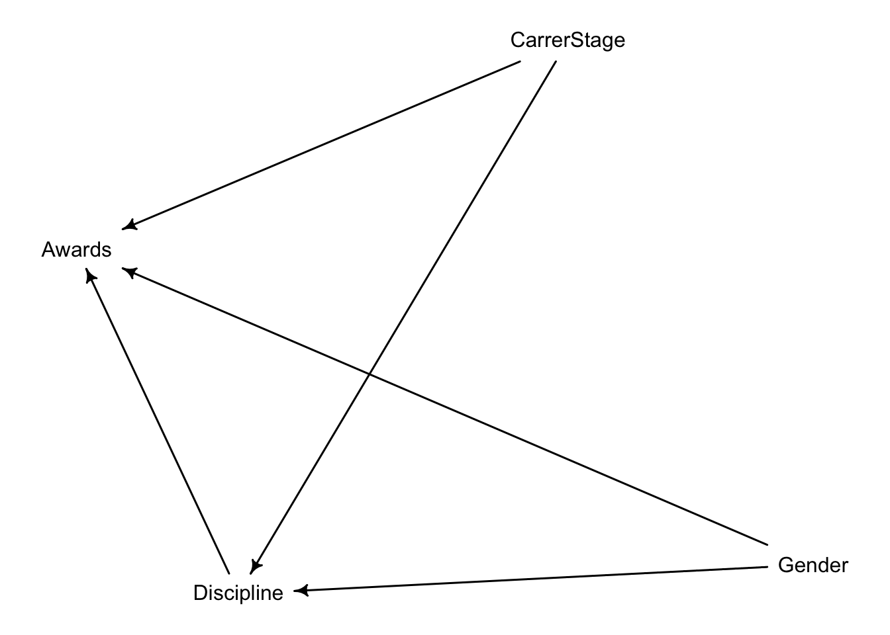
What happens now when you condition on discipline?
We are interested on the effect of Gender on Awards. If we only include Gender, there’s one backdoor path: the effect of Carrer Stage on Awards that gets picked up by discipline. However, that information won’t flow towards gender: Disciplin forms a collider that it is closed as long as we don’t adjust our estimates with discipline:
{}Therefore, according to our DAG, we can estimate the total effect of gender on awards.
However, once we adjust for discipline, we open the collider. Thus, we cannot reliably estimate the direct effect of Gender on awards unless we adjust for Carrer Stage.
{ CarrerStage }The data in data(Primates301) were first introduced at the end of Chapter 7. In this problem, you will consider how brain size is associated with social learning. There are three parts
name genus species
1 Allenopithecus_nigroviridis Allenopithecus nigroviridis
2 Allocebus_trichotis Allocebus trichotis
3 Alouatta_belzebul Alouatta belzebul
4 Alouatta_caraya Alouatta caraya
5 Alouatta_guariba Alouatta guariba
6 Alouatta_palliata Alouatta palliata
7 Alouatta_pigra Alouatta pigra
8 Alouatta_sara Alouatta sara
9 Alouatta_seniculus Alouatta seniculus
10 Aotus_azarai Aotus azarai
11 Aotus_azarai_boliviensis Aotus azarai
12 Aotus_brumbacki Aotus brumbacki
13 Aotus_infulatus Aotus infulatus
14 Aotus_lemurinus Aotus lemurinus
15 Aotus_lemurinus_griseimembra Aotus lemurinus
16 Aotus_nancymaae Aotus nancymaae
17 Aotus_nigriceps Aotus nigriceps
18 Aotus_trivirgatus Aotus trivirgatus
19 Aotus_vociferans Aotus vociferans
20 Archaeolemur_majori Archaeolemur majori
21 Arctocebus_aureus Arctocebus aureus
22 Arctocebus_calabarensis Arctocebus calabarensis
23 Ateles_belzebuth Ateles belzebuth
24 Ateles_fusciceps Ateles fusciceps
25 Ateles_geoffroyi Ateles geoffroyi
26 Ateles_paniscus Ateles paniscus
27 Avahi_cleesei Avahi cleesei
28 Avahi_laniger Avahi laniger
29 Avahi_occidentalis Avahi occidentalis
30 Avahi_unicolor Avahi unicolor
31 Brachyteles_arachnoides Brachyteles arachnoides
32 Bunopithecus_hoolock Bunopithecus hoolock
33 Cacajao_calvus Cacajao calvus
34 Cacajao_melanocephalus Cacajao melanocephalus
35 Callicebus_donacophilus Callicebus donacophilus
36 Callicebus_hoffmannsi Callicebus hoffmannsi
37 Callicebus_moloch Callicebus moloch
38 Callicebus_personatus Callicebus personatus
39 Callicebus_torquatus Callicebus torquatus
40 Callimico_goeldii Callimico goeldii
41 Callithrix_argentata Callithrix argentata
42 Callithrix_aurita Callithrix aurita
43 Callithrix_emiliae Callithrix emiliae
44 Callithrix_geoffroyi Callithrix geoffroyi
45 Callithrix_humeralifera Callithrix humeralifera
46 Callithrix_jacchus Callithrix jacchus
47 Callithrix_kuhli Callithrix kuhli
48 Callithrix_mauesi Callithrix mauesi
49 Callithrix_penicillata Callithrix penicillata
50 Callithrix_pygmaea Callithrix pygmaea
51 Cebus_albifrons Cebus albifrons
52 Cebus_apella Cebus apella
53 Cebus_capucinus Cebus capucinus
54 Cebus_olivaceus Cebus olivaceus
55 Cebus_xanthosternos Cebus xanthosternos
56 Cercocebus_agilis Cercocebus agilis
57 Cercocebus_galeritus Cercocebus galeritus
58 Cercocebus_torquatus Cercocebus torquatus
59 Cercocebus_torquatus_atys Cercocebus torquatus
60 Cercopithecus_albogularis Cercopithecus albogularis
61 Cercopithecus_ascanius Cercopithecus ascanius
62 Cercopithecus_campbelli Cercopithecus campbelli
63 Cercopithecus_campbelli_lowei Cercopithecus campbelli
64 Cercopithecus_cephus Cercopithecus cephus
65 Cercopithecus_cephus_cephus Cercopithecus cephus
66 Cercopithecus_cephus_ngottoensis Cercopithecus cephus
67 Cercopithecus_diana Cercopithecus diana
68 Cercopithecus_erythrogaster Cercopithecus erythrogaster
69 Cercopithecus_erythrogaster_erythrogaster Cercopithecus erythrogaster
70 Cercopithecus_erythrotis Cercopithecus erythrotis
71 Cercopithecus_hamlyni Cercopithecus hamlyni
72 Cercopithecus_lhoesti Cercopithecus lhoesti
73 Cercopithecus_mitis Cercopithecus mitis
74 Cercopithecus_mona Cercopithecus mona
75 Cercopithecus_neglectus Cercopithecus neglectus
76 Cercopithecus_nictitans Cercopithecus nictitans
77 Cercopithecus_petaurista Cercopithecus petaurista
78 Cercopithecus_pogonias Cercopithecus pogonias
79 Cercopithecus_preussi Cercopithecus preussi
80 Cercopithecus_solatus Cercopithecus solatus
81 Cercopithecus_wolfi Cercopithecus wolfi
82 Cheirogaleus_crossleyi Cheirogaleus crossleyi
83 Cheirogaleus_major Cheirogaleus major
84 Cheirogaleus_medius Cheirogaleus medius
85 Chiropotes_satanas Chiropotes satanas
86 Chlorocebus_aethiops Chlorocebus aethiops
87 Chlorocebus_pygerythrus Chlorocebus pygerythrus
88 Chlorocebus_pygerythrus_cynosurus Chlorocebus pygerythrus
89 Chlorocebus_sabaeus Chlorocebus sabaeus
90 Chlorocebus_tantalus Chlorocebus tantalus
91 Colobus_angolensis Colobus angolensis
92 Colobus_angolensis_palliatus Colobus angolensis
93 Colobus_guereza Colobus guereza
94 Colobus_polykomos Colobus polykomos
95 Colobus_satanas Colobus satanas
96 Colobus_vellerosus Colobus vellerosus
97 Daubentonia_madagascariensis Daubentonia madagascariensis
98 Erythrocebus_patas Erythrocebus patas
99 Eulemur_coronatus Eulemur coronatus
100 Eulemur_fulvus_albifrons Eulemur fulvus
101 Eulemur_fulvus_albocollaris Eulemur fulvus
102 Eulemur_fulvus_collaris Eulemur fulvus
103 Eulemur_fulvus_fulvus Eulemur fulvus
104 Eulemur_fulvus_mayottensis Eulemur fulvus
105 Eulemur_fulvus_rufus Eulemur fulvus
106 Eulemur_fulvus_sanfordi Eulemur fulvus
107 Eulemur_macaco_flavifrons Eulemur macaco
108 Eulemur_macaco_macaco Eulemur macaco
109 Eulemur_mongoz Eulemur mongoz
110 Eulemur_rubriventer Eulemur rubriventer
111 Euoticus_elegantulus Euoticus elegantulus
112 Galago_alleni Galago alleni
113 Galago_gallarum Galago gallarum
114 Galago_granti Galago granti
115 Galago_matschiei Galago matschiei
116 Galago_moholi Galago moholi
117 Galago_senegalensis Galago senegalensis
118 Galagoides_demidoff Galagoides demidoff
119 Galagoides_zanzibaricus Galagoides zanzibaricus
120 Gorilla_beringei Gorilla beringei
121 Gorilla_gorilla_gorilla Gorilla gorilla
122 Gorilla_gorilla_graueri Gorilla gorilla
123 Hapalemur_aureus Hapalemur aureus
124 Hapalemur_griseus Hapalemur griseus
125 Hapalemur_griseus_alaotrensis Hapalemur griseus
126 Hapalemur_griseus_griseus Hapalemur griseus
127 Hapalemur_griseus_meridionalis Hapalemur griseus
128 Hapalemur_griseus_occidentalis Hapalemur griseus
129 Hapalemur_simus Hapalemur simus
130 Homo_sapiens Homo sapiens
131 Homo_sapiens_neanderthalensis Homo sapiens
132 Hylobates_agilis Hylobates agilis
133 Hylobates_klossii Hylobates klossii
134 Hylobates_lar Hylobates lar
135 Hylobates_moloch Hylobates moloch
136 Hylobates_muelleri Hylobates muelleri
137 Hylobates_pileatus Hylobates pileatus
138 Indri_indri Indri indri
139 Lagothrix_lagotricha Lagothrix lagotricha
140 Lemur_catta Lemur catta
141 Leontopithecus_chrysomelas Leontopithecus chrysomelas
142 Leontopithecus_chrysopygus Leontopithecus chrysopygus
143 Leontopithecus_rosalia Leontopithecus rosalia
144 Lepilemur_aeeclis Lepilemur aeeclis
145 Lepilemur_ankaranensis Lepilemur ankaranensis
146 Lepilemur_dorsalis Lepilemur dorsalis
147 Lepilemur_edwardsi Lepilemur edwardsi
148 Lepilemur_hubbardorum Lepilemur hubbardorum
149 Lepilemur_leucopus Lepilemur leucopus
150 Lepilemur_manasamody Lepilemur manasamody
151 Lepilemur_microdon Lepilemur microdon
152 Lepilemur_mitsinjoensis Lepilemur mitsinjoensis
153 Lepilemur_mustelinus Lepilemur mustelinus
154 Lepilemur_otto Lepilemur otto
155 Lepilemur_randrianasoli Lepilemur randrianasoli
156 Lepilemur_ruficaudatus Lepilemur ruficaudatus
157 Lepilemur_sahamalazensis Lepilemur sahamalazensis
158 Lepilemur_seali Lepilemur seali
159 Lepilemur_septentrionalis Lepilemur septentrionalis
160 Lophocebus_albigena Lophocebus albigena
161 Lophocebus_aterrimus Lophocebus aterrimus
162 Loris_lydekkerianus Loris lydekkerianus
163 Loris_tardigradus Loris tardigradus
164 Macaca_arctoides Macaca arctoides
165 Macaca_assamensis Macaca assamensis
166 Macaca_brunnescens Macaca brunnescens
167 Macaca_cyclopis Macaca cyclopis
168 Macaca_fascicularis Macaca fascicularis
169 Macaca_fuscata Macaca fuscata
170 Macaca_hecki Macaca hecki
171 Macaca_leonina Macaca leonina
172 Macaca_maura Macaca maura
173 Macaca_mulatta Macaca mulatta
174 Macaca_munzala Macaca munzala
175 Macaca_nemestrina Macaca nemestrina
176 Macaca_nemestrina_leonina Macaca nemestrina
177 Macaca_nemestrina_siberu Macaca nemestrina
178 Macaca_nigra Macaca nigra
179 Macaca_nigrescens Macaca nigrescens
180 Macaca_ochreata Macaca ochreata
181 Macaca_pagensis Macaca pagensis
182 Macaca_radiata Macaca radiata
183 Macaca_silenus Macaca silenus
184 Macaca_sinica Macaca sinica
185 Macaca_sylvanus Macaca sylvanus
186 Macaca_thibetana Macaca thibetana
187 Macaca_tonkeana Macaca tonkeana
188 Mandrillus_leucophaeus Mandrillus leucophaeus
189 Mandrillus_sphinx Mandrillus sphinx
190 Microcebus_berthae Microcebus berthae
191 Microcebus_bongolavensis Microcebus bongolavensis
192 Microcebus_danfossi Microcebus danfossi
193 Microcebus_griseorufus Microcebus griseorufus
194 Microcebus_jollyae Microcebus jollyae
195 Microcebus_lehilahytsara Microcebus lehilahytsara
196 Microcebus_lokobensis Microcebus lokobensis
197 Microcebus_macarthurii Microcebus macarthurii
198 Microcebus_mamiratra Microcebus mamiratra
199 Microcebus_mittermeieri Microcebus mittermeieri
200 Microcebus_murinus Microcebus murinus
201 Microcebus_myoxinus Microcebus myoxinus
202 Microcebus_ravelobensis Microcebus ravelobensis
203 Microcebus_rufus Microcebus rufus
204 Microcebus_sambiranensis Microcebus sambiranensis
205 Microcebus_simmonsi Microcebus simmonsi
206 Microcebus_tavaratra Microcebus tavaratra
207 Miopithecus_talapoin Miopithecus talapoin
208 Mirza_coquereli Mirza coquereli
209 Mirza_zaza Mirza zaza
210 Nasalis_larvatus Nasalis larvatus
211 Nomascus_concolor Nomascus concolor
212 Nomascus_gabriellae Nomascus gabriellae
213 Nomascus_leucogenys Nomascus leucogenys
214 Nomascus_nasutus Nomascus nasutus
215 Nomascus_siki Nomascus siki
216 Nycticebus_bengalensis Nycticebus bengalensis
217 Nycticebus_coucang Nycticebus coucang
218 Nycticebus_javanicus Nycticebus javanicus
219 Nycticebus_menagensis Nycticebus menagensis
220 Nycticebus_pygmaeus Nycticebus pygmaeus
221 Otolemur_crassicaudatus Otolemur crassicaudatus
222 Otolemur_garnettii Otolemur garnettii
223 Pan_paniscus Pan paniscus
224 Pan_troglodytes_schweinfurthii Pan troglodytes
225 Pan_troglodytes_troglodytes Pan troglodytes
226 Pan_troglodytes_vellerosus Pan troglodytes
227 Pan_troglodytes_verus Pan troglodytes
228 Papio_anubis Papio anubis
229 Papio_cynocephalus Papio cynocephalus
230 Papio_hamadryas Papio hamadryas
231 Papio_papio Papio papio
232 Papio_ursinus Papio ursinus
233 Perodicticus_potto Perodicticus potto
234 Phaner_furcifer Phaner furcifer
235 Phaner_furcifer_pallescens Phaner furcifer
236 Piliocolobus_badius Piliocolobus badius
237 Piliocolobus_foai Piliocolobus foai
238 Piliocolobus_gordonorum Piliocolobus gordonorum
239 Piliocolobus_kirkii Piliocolobus kirkii
240 Piliocolobus_pennantii Piliocolobus pennantii
241 Piliocolobus_preussi Piliocolobus preussi
242 Piliocolobus_rufomitratus Piliocolobus rufomitratus
243 Piliocolobus_tephrosceles Piliocolobus tephrosceles
244 Piliocolobus_tholloni Piliocolobus tholloni
245 Pithecia_irrorata Pithecia irrorata
246 Pithecia_pithecia Pithecia pithecia
247 Pongo_abelii Pongo abelii
248 Pongo_pygmaeus Pongo pygmaeus
249 Presbytis_comata Presbytis comata
250 Presbytis_melalophos Presbytis melalophos
251 Procolobus_verus Procolobus verus
252 Propithecus_coquereli Propithecus coquereli
253 Propithecus_deckenii Propithecus deckenii
254 Propithecus_diadema Propithecus diadema
255 Propithecus_edwardsi Propithecus edwardsi
256 Propithecus_tattersalli Propithecus tattersalli
257 Propithecus_verreauxi Propithecus verreauxi
258 Pygathrix_cinerea Pygathrix cinerea
259 Pygathrix_nemaeus Pygathrix nemaeus
260 Rhinopithecus_avunculus Rhinopithecus avunculus
261 Rhinopithecus_bieti Rhinopithecus bieti
262 Rhinopithecus_brelichi Rhinopithecus brelichi
263 Rhinopithecus_roxellana Rhinopithecus roxellana
264 Rungwecebus_kipunji Rungwecebus kipunji
265 Saguinus_bicolor Saguinus bicolor
266 Saguinus_fuscicollis Saguinus fuscicollis
267 Saguinus_fuscicollis_melanoleucus Saguinus fuscicollis
268 Saguinus_geoffroyi Saguinus geoffroyi
269 Saguinus_imperator Saguinus imperator
270 Saguinus_leucopus Saguinus leucopus
271 Saguinus_midas Saguinus midas
272 Saguinus_mystax Saguinus mystax
273 Saguinus_niger Saguinus niger
274 Saguinus_oedipus Saguinus oedipus
275 Saguinus_tripartitus Saguinus tripartitus
276 Saimiri_boliviensis Saimiri boliviensis
277 Saimiri_oerstedii Saimiri oerstedii
278 Saimiri_sciureus Saimiri sciureus
279 Saimiri_ustus Saimiri ustus
280 Semnopithecus_entellus Semnopithecus entellus
281 Symphalangus_syndactylus Symphalangus syndactylus
282 Tarsius_bancanus Tarsius bancanus
283 Tarsius_dentatus Tarsius dentatus
284 Tarsius_lariang Tarsius lariang
285 Tarsius_syrichta Tarsius syrichta
286 Theropithecus_gelada Theropithecus gelada
287 Trachypithecus_auratus Trachypithecus auratus
288 Trachypithecus_cristatus Trachypithecus cristatus
289 Trachypithecus_delacouri Trachypithecus delacouri
290 Trachypithecus_francoisi Trachypithecus francoisi
291 Trachypithecus_geei Trachypithecus geei
292 Trachypithecus_germaini Trachypithecus germaini
293 Trachypithecus_johnii Trachypithecus johnii
294 Trachypithecus_laotum Trachypithecus laotum
295 Trachypithecus_obscurus Trachypithecus obscurus
296 Trachypithecus_phayrei Trachypithecus phayrei
297 Trachypithecus_pileatus Trachypithecus pileatus
298 Trachypithecus_poliocephalus Trachypithecus poliocephalus
299 Trachypithecus_vetulus Trachypithecus vetulus
300 Varecia_rubra Varecia rubra
301 Varecia_variegata_variegata Varecia variegata
subspecies spp_id genus_id social_learning research_effort brain
1 <NA> 1 1 0 6 58.02
2 <NA> 2 2 0 6 NA
3 <NA> 3 3 0 15 52.84
4 <NA> 4 3 0 45 52.63
5 <NA> 5 3 0 37 51.70
6 <NA> 6 3 3 79 49.88
7 <NA> 7 3 0 25 51.13
8 <NA> 8 3 0 4 59.08
9 <NA> 9 3 0 82 55.22
10 <NA> 10 4 0 22 20.67
11 boliviensis 11 4 NA NA NA
12 <NA> 12 4 0 NA NA
13 <NA> 13 4 0 6 NA
14 <NA> 14 4 0 16 16.30
15 griseimembra 15 4 NA NA NA
16 <NA> 16 4 0 5 NA
17 <NA> 17 4 0 1 NA
18 <NA> 18 4 0 58 16.85
19 <NA> 19 4 0 12 NA
20 <NA> 20 5 NA NA NA
21 <NA> 21 6 NA NA 5.88
22 <NA> 22 6 0 1 6.92
23 <NA> 23 7 0 12 117.02
24 <NA> 24 7 0 4 114.24
25 <NA> 25 7 2 58 105.09
26 <NA> 26 7 0 30 103.85
27 <NA> 27 8 NA NA NA
28 <NA> 28 8 0 10 9.86
29 <NA> 29 8 0 6 7.95
30 <NA> 30 8 NA NA NA
31 <NA> 31 9 0 57 NA
32 <NA> 32 10 0 24 110.68
33 <NA> 33 11 0 11 76.00
34 <NA> 34 11 0 8 68.77
35 <NA> 35 12 0 1 NA
36 <NA> 36 12 0 NA NA
37 <NA> 37 12 0 18 NA
38 <NA> 38 12 0 19 NA
39 <NA> 39 12 0 4 NA
40 <NA> 40 13 0 43 11.43
41 <NA> 41 14 0 16 7.95
42 <NA> 42 14 0 NA NA
43 <NA> 43 14 NA NA NA
44 <NA> 44 14 0 NA NA
45 <NA> 45 14 0 4 NA
46 <NA> 46 14 2 161 7.24
47 <NA> 47 14 0 NA NA
48 <NA> 48 14 0 NA NA
49 <NA> 49 14 0 NA 7.32
50 <NA> 50 14 0 36 4.17
51 <NA> 51 15 1 13 65.45
52 <NA> 52 15 17 249 66.63
53 <NA> 53 15 5 60 72.93
54 <NA> 54 15 0 18 69.84
55 <NA> 55 15 NA NA 66.09
56 <NA> 56 16 NA NA 116.43
57 <NA> 57 16 0 19 99.07
58 <NA> 58 16 1 32 105.99
59 atys 59 16 NA NA 94.68
60 <NA> 60 17 NA NA 70.10
61 <NA> 61 17 1 26 59.58
62 <NA> 62 17 0 11 57.39
63 lowei 63 17 NA NA 55.64
64 <NA> 64 17 0 8 65.26
65 cephus 65 17 NA NA NA
66 ngottoensis 66 17 NA NA NA
67 <NA> 67 17 1 28 62.61
68 <NA> 68 17 0 3 NA
69 erythrogaster 69 17 NA NA NA
70 <NA> 70 17 0 3 65.40
71 <NA> 71 17 0 4 65.90
72 <NA> 72 17 0 7 74.20
73 <NA> 73 17 0 56 71.33
74 <NA> 74 17 0 8 61.84
75 <NA> 75 17 0 17 65.97
76 <NA> 76 17 0 7 71.13
77 <NA> 77 17 0 5 55.08
78 <NA> 78 17 0 8 59.56
79 <NA> 79 17 0 2 NA
80 <NA> 80 17 0 6 NA
81 <NA> 81 17 0 7 61.45
82 <NA> 82 18 NA NA NA
83 <NA> 83 18 0 3 5.81
84 <NA> 84 18 0 13 2.60
85 <NA> 85 19 0 21 48.33
86 <NA> 86 20 5 91 65.00
87 <NA> 87 20 NA NA 62.58
88 cynosurus 88 20 NA NA NA
89 <NA> 89 20 NA NA 64.91
90 <NA> 90 20 NA NA NA
91 <NA> 91 21 0 16 77.70
92 palliatus 92 21 NA NA NA
93 <NA> 93 21 0 42 74.39
94 <NA> 94 21 0 17 73.83
95 <NA> 95 21 0 10 74.90
96 <NA> 96 21 NA NA 73.07
97 <NA> 97 22 0 52 44.85
98 <NA> 98 23 2 33 97.73
99 <NA> 99 24 0 11 20.65
100 albifrons 100 24 NA NA 21.45
101 albocollaris 101 24 NA NA 22.10
102 collaris 102 24 NA NA NA
103 fulvus 103 24 1 81 25.77
104 mayottensis 104 24 NA NA NA
105 rufus 105 24 NA NA 25.40
106 sanfordi 106 24 NA NA NA
107 flavifrons 107 24 NA NA NA
108 macaco 108 24 0 32 24.51
109 <NA> 109 24 0 13 20.17
110 <NA> 110 24 0 13 26.23
111 <NA> 111 25 0 1 5.53
112 <NA> 112 26 0 2 5.58
113 <NA> 113 26 NA NA NA
114 <NA> 114 26 0 NA 4.07
115 <NA> 115 26 NA NA 4.62
116 <NA> 116 26 0 14 3.71
117 <NA> 117 26 0 20 3.96
118 <NA> 118 27 0 5 2.65
119 <NA> 119 27 0 NA 3.51
120 <NA> 120 28 NA NA 491.27
121 gorilla 121 28 13 517 490.41
122 graueri 122 28 NA NA NA
123 <NA> 123 29 0 5 NA
124 <NA> 124 29 0 40 14.09
125 alaotrensis 125 29 NA NA 13.80
126 griseus 126 29 NA NA NA
127 meridionalis 127 29 NA NA NA
128 occidentalis 128 29 NA NA 14.20
129 <NA> 129 29 0 8 27.14
130 <NA> 130 30 NA NA NA
131 neanderthalensis 131 30 NA NA NA
132 <NA> 132 31 0 16 91.16
133 <NA> 133 31 0 4 87.99
134 <NA> 134 31 0 86 101.87
135 <NA> 135 31 0 16 NA
136 <NA> 136 31 0 5 85.13
137 <NA> 137 31 0 16 84.69
138 <NA> 138 32 0 8 34.81
139 <NA> 139 33 0 34 96.50
140 <NA> 140 34 4 103 22.90
141 <NA> 141 35 0 46 11.84
142 <NA> 142 35 0 38 NA
143 <NA> 143 35 0 85 12.83
144 <NA> 144 36 NA NA NA
145 <NA> 145 36 NA NA NA
146 <NA> 146 36 0 1 6.70
147 <NA> 147 36 0 5 7.25
148 <NA> 148 36 NA NA NA
149 <NA> 149 36 0 2 6.87
150 <NA> 150 36 NA NA NA
151 <NA> 151 36 0 1 9.75
152 <NA> 152 36 NA NA NA
153 <NA> 153 36 0 5 9.56
154 <NA> 154 36 NA NA NA
155 <NA> 155 36 NA NA NA
156 <NA> 156 36 0 2 8.25
157 <NA> 157 36 NA NA NA
158 <NA> 158 36 NA NA NA
159 <NA> 159 36 0 NA NA
160 <NA> 160 37 0 34 93.97
161 <NA> 161 37 0 6 101.59
162 <NA> 162 38 NA NA 6.34
163 <NA> 163 38 0 14 5.87
164 <NA> 164 39 1 48 100.70
165 <NA> 165 39 0 17 90.46
166 <NA> 166 39 NA NA NA
167 <NA> 167 39 0 12 82.00
168 <NA> 168 39 7 174 63.98
169 <NA> 169 39 45 253 102.92
170 <NA> 170 39 NA NA NA
171 <NA> 171 39 NA NA 85.60
172 <NA> 172 39 0 22 NA
173 <NA> 173 39 15 296 88.98
174 <NA> 174 39 NA NA NA
175 <NA> 175 39 3 51 105.59
176 leonina 176 39 NA NA NA
177 siberu 177 39 NA NA NA
178 <NA> 178 39 0 27 94.90
179 <NA> 179 39 NA NA NA
180 <NA> 180 39 0 3 NA
181 <NA> 181 39 NA NA NA
182 <NA> 182 39 0 34 74.87
183 <NA> 183 39 1 48 85.00
184 <NA> 184 39 0 12 69.70
185 <NA> 185 39 0 67 93.20
186 <NA> 186 39 1 42 NA
187 <NA> 187 39 2 26 NA
188 <NA> 188 40 0 18 148.00
189 <NA> 189 40 3 30 153.88
190 <NA> 190 41 NA NA NA
191 <NA> 191 41 NA NA NA
192 <NA> 192 41 NA NA NA
193 <NA> 193 41 NA NA NA
194 <NA> 194 41 NA NA NA
195 <NA> 195 41 NA NA NA
196 <NA> 196 41 NA NA NA
197 <NA> 197 41 NA NA NA
198 <NA> 198 41 NA NA NA
199 <NA> 199 41 NA NA NA
200 <NA> 200 41 0 66 1.63
201 <NA> 201 41 0 NA NA
202 <NA> 202 41 0 NA NA
203 <NA> 203 41 0 8 1.72
204 <NA> 204 41 NA NA NA
205 <NA> 205 41 NA NA NA
206 <NA> 206 41 NA NA NA
207 <NA> 207 42 0 4 NA
208 <NA> 208 43 0 3 5.80
209 <NA> 209 43 NA NA NA
210 <NA> 210 44 0 17 92.30
211 <NA> 211 45 0 21 NA
212 <NA> 212 45 0 4 119.38
213 <NA> 213 45 0 8 NA
214 <NA> 214 45 NA NA NA
215 <NA> 215 45 NA NA NA
216 <NA> 216 46 NA NA 13.49
217 <NA> 217 46 0 37 10.13
218 <NA> 218 46 NA NA NA
219 <NA> 219 46 NA NA 9.67
220 <NA> 220 46 0 19 7.23
221 <NA> 221 47 1 36 11.78
222 <NA> 222 47 1 12 11.50
223 <NA> 223 48 5 225 341.29
224 schweinfurthii 224 48 NA NA 390.33
225 troglodytes 225 48 214 755 363.05
226 vellerosus 226 48 NA NA NA
227 verus 227 48 NA NA 371.74
228 <NA> 228 49 4 43 167.42
229 <NA> 229 49 2 114 163.19
230 <NA> 230 49 1 78 146.17
231 <NA> 231 49 3 8 142.50
232 <NA> 232 49 5 22 178.00
233 <NA> 233 50 0 10 12.42
234 <NA> 234 51 0 1 NA
235 pallescens 235 51 NA NA 6.68
236 <NA> 236 52 0 52 63.59
237 <NA> 237 52 NA NA NA
238 <NA> 238 52 NA NA NA
239 <NA> 239 52 1 7 57.25
240 <NA> 240 52 0 NA NA
241 <NA> 241 52 0 NA NA
242 <NA> 242 52 NA NA NA
243 <NA> 243 52 NA NA 70.95
244 <NA> 244 52 NA NA NA
245 <NA> 245 53 0 7 NA
246 <NA> 246 53 0 28 32.26
247 <NA> 247 54 NA NA 389.50
248 <NA> 248 54 86 321 377.38
249 <NA> 249 55 0 11 80.30
250 <NA> 250 55 0 6 64.85
251 <NA> 251 56 0 3 52.60
252 <NA> 252 57 NA NA 30.19
253 <NA> 253 57 NA NA 30.15
254 <NA> 254 57 0 28 39.80
255 <NA> 255 57 NA NA 39.49
256 <NA> 256 57 0 9 NA
257 <NA> 257 57 1 41 26.21
258 <NA> 258 58 NA NA NA
259 <NA> 259 58 0 25 91.41
260 <NA> 260 59 0 11 NA
261 <NA> 261 59 0 NA NA
262 <NA> 262 59 0 16 NA
263 <NA> 263 59 0 36 117.76
264 <NA> 264 60 NA NA NA
265 <NA> 265 61 0 9 NA
266 <NA> 266 61 2 81 7.94
267 melanoleucus 267 61 NA NA NA
268 <NA> 268 61 0 NA 10.14
269 <NA> 269 61 0 16 NA
270 <NA> 270 61 0 3 9.70
271 <NA> 271 61 0 17 9.78
272 <NA> 272 61 0 46 11.09
273 <NA> 273 61 NA NA 9.48
274 <NA> 274 61 0 153 9.76
275 <NA> 275 61 0 5 NA
276 <NA> 276 62 0 36 NA
277 <NA> 277 62 1 4 25.07
278 <NA> 278 62 1 89 24.14
279 <NA> 279 62 0 4 NA
280 <NA> 280 63 2 98 110.93
281 <NA> 281 64 0 40 123.50
282 <NA> 282 65 0 8 3.16
283 <NA> 283 65 0 2 3.00
284 <NA> 284 65 NA NA NA
285 <NA> 285 65 0 10 3.36
286 <NA> 286 66 0 34 133.33
287 <NA> 287 67 0 2 NA
288 <NA> 288 67 0 8 57.86
289 <NA> 289 67 0 NA NA
290 <NA> 290 67 0 45 NA
291 <NA> 291 67 0 7 81.30
292 <NA> 292 67 NA NA NA
293 <NA> 293 67 1 9 84.60
294 <NA> 294 67 NA NA NA
295 <NA> 295 67 0 6 62.12
296 <NA> 296 67 0 16 72.84
297 <NA> 297 67 0 5 103.64
298 <NA> 298 67 NA NA NA
299 <NA> 299 67 0 2 61.29
300 <NA> 300 68 NA NA 31.08
301 variegata 301 68 0 57 32.12
body group_size gestation weaning longevity sex_maturity
1 4655.00 40.00 NA 106.15 276.00 NA
2 78.09 1.00 NA NA NA NA
3 6395.00 7.40 NA NA NA NA
4 5383.00 8.90 185.92 323.16 243.60 1276.72
5 5175.00 7.40 NA NA NA NA
6 6250.00 13.10 185.42 495.60 300.00 1578.42
7 8915.00 5.50 185.92 NA 240.00 NA
8 6611.04 NA NA NA NA NA
9 5950.00 7.90 189.90 370.04 300.00 1690.22
10 1205.00 4.10 NA 229.69 NA NA
11 NA NA NA NA NA NA
12 NA NA NA NA NA NA
13 NA NA NA NA NA NA
14 734.00 NA 132.23 74.57 216.00 755.15
15 NA NA NA NA NA NA
16 791.03 4.00 NA NA NA NA
17 958.00 3.30 NA NA NA NA
18 989.00 3.15 133.47 76.21 303.60 736.60
19 703.00 3.30 NA NA NA NA
20 NA NA NA NA NA NA
21 210.00 NA NA NA NA NA
22 309.00 1.00 133.74 109.26 156.00 298.91
23 8167.00 14.50 138.20 NA 336.00 NA
24 9025.00 NA 224.70 482.70 288.00 1799.68
25 7535.00 42.00 226.37 816.35 327.60 2104.57
26 8280.00 20.00 228.18 805.41 453.60 2104.57
27 NA NA NA NA NA NA
28 1207.00 2.00 136.15 149.15 NA NA
29 801.00 3.00 NA NA NA NA
30 NA NA NA NA NA NA
31 10537.31 19.60 221.75 734.82 NA 2876.24
32 6728.00 3.20 232.50 635.13 NA 2689.08
33 3165.00 23.70 180.00 339.29 324.00 1262.74
34 2935.00 30.00 NA NA 216.00 NA
35 897.67 1.00 NA NA NA NA
36 1067.61 1.00 NA NA NA NA
37 958.13 2.95 164.00 58.85 303.60 1262.74
38 1390.80 2.35 NA NA NA NA
39 1245.00 3.85 NA 121.66 NA 1683.65
40 484.00 6.85 153.99 66.53 214.80 413.84
41 345.00 9.50 NA NA 201.60 701.52
42 429.00 6.00 140.00 NA NA NA
43 309.58 NA NA NA NA NA
44 342.00 NA NA NA NA NA
45 370.00 8.50 NA 99.01 180.00 NA
46 320.00 8.55 144.00 60.24 201.60 455.99
47 374.99 NA NA NA NA NA
48 443.79 NA NA NA NA NA
49 328.00 5.90 NA NA NA NA
50 116.00 6.00 134.44 90.73 181.20 708.50
51 2735.00 25.00 158.29 270.32 528.00 1501.69
52 2936.00 7.90 154.99 263.12 541.20 1760.81
53 2861.00 18.15 161.06 514.07 657.60 2134.73
54 2931.00 11.45 NA 725.86 492.00 2525.48
55 2440.00 NA NA NA NA NA
56 7580.00 NA NA NA NA NA
57 7435.00 20.35 174.43 NA 252.00 2735.94
58 7485.00 26.85 168.98 NA 360.00 1318.86
59 8600.00 35.00 165.08 NA 321.60 1321.67
60 5620.00 32.50 NA NA NA NA
61 3714.00 26.30 148.50 146.54 339.60 1718.73
62 3600.00 11.00 180.80 362.93 396.00 NA
63 3187.00 NA NA NA NA NA
64 3585.00 11.00 169.51 362.93 276.00 1521.90
65 NA NA NA NA NA NA
66 NA NA NA NA NA NA
67 4550.00 24.95 NA 362.93 447.60 2279.95
68 3444.88 NA NA NA NA NA
69 NA NA NA NA NA NA
70 3250.00 NA NA NA NA NA
71 4425.00 NA NA NA NA NA
72 4710.00 17.40 NA NA 192.00 NA
73 6109.00 16.00 138.39 688.08 325.20 2049.25
74 3719.00 NA NA NA 360.00 NA
75 5450.00 4.50 172.07 417.62 315.60 2076.39
76 5465.00 16.00 169.51 NA 276.00 1684.59
77 3609.00 14.00 NA NA 228.00 NA
78 3580.00 15.00 169.51 NA 289.20 1684.59
79 5132.57 3.00 NA NA NA NA
80 5256.91 10.00 NA NA NA NA
81 3390.00 NA NA NA NA NA
82 NA NA NA NA NA NA
83 400.00 1.00 70.00 47.14 180.00 420.91
84 140.00 1.00 61.79 60.65 231.60 413.84
85 3030.00 14.40 157.67 NA 216.00 NA
86 3720.00 NA NA 217.76 379.20 NA
87 4324.00 NA NA NA NA NA
88 NA NA NA NA NA NA
89 4312.00 NA NA NA NA NA
90 NA NA NA NA NA NA
91 8625.00 10.90 NA NA NA NA
92 NA NA NA NA NA NA
93 8589.00 7.60 169.02 387.79 294.00 1929.19
94 9100.00 10.20 172.69 213.78 366.00 1629.84
95 8910.00 15.50 192.76 NA NA NA
96 7820.00 16.00 NA NA NA NA
97 2555.00 1.00 166.48 197.70 291.60 834.72
98 9450.00 28.00 167.20 211.79 286.80 1246.07
99 1180.00 6.95 124.04 NA 220.80 701.52
100 2336.00 NA NA NA NA NA
101 2140.00 NA NA NA NA NA
102 NA NA NA NA NA NA
103 2292.00 9.15 120.83 134.64 444.00 791.75
104 NA NA NA NA NA NA
105 2220.00 9.50 NA NA NA NA
106 2394.03 7.70 NA NA NA NA
107 NA NA NA NA NA NA
108 2390.00 9.20 127.49 143.28 360.00 660.75
109 1212.00 2.70 129.00 151.13 360.00 1060.70
110 1960.00 3.30 126.99 151.22 NA 566.36
111 274.00 1.00 133.45 NA 180.00 NA
112 252.00 6.00 133.00 NA 144.00 283.18
113 250.00 NA NA NA NA NA
114 NA NA NA NA NA NA
115 210.00 1.00 NA NA NA NA
116 148.00 1.00 122.29 90.46 198.00 420.91
117 194.00 3.50 126.98 93.93 204.00 330.37
118 75.00 5.50 111.00 43.47 168.00 345.24
119 143.00 1.00 120.00 59.27 NA 322.75
120 130000.00 NA NA NA NA NA
121 120950.00 6.00 257.00 920.35 648.00 3353.12
122 NA NA NA NA NA NA
123 1562.41 3.00 142.50 NA NA NA
124 709.00 3.10 141.24 136.29 205.20 1003.17
125 1240.00 NA NA NA NA NA
126 NA NA NA NA NA NA
127 NA NA NA NA NA NA
128 NA NA NA NA NA NA
129 2150.00 7.50 140.00 NA 144.00 NA
130 58540.63 NA 274.78 725.86 1470.00 5582.93
131 NA NA NA NA NA NA
132 5850.00 4.20 NA NA 528.00 NA
133 5795.00 3.00 207.59 NA NA NA
134 5595.00 3.20 212.91 725.86 480.00 3852.57
135 5860.81 2.15 241.20 NA NA NA
136 5821.00 3.20 206.70 NA NA NA
137 5470.00 3.25 200.16 635.13 432.00 2454.24
138 6335.00 3.10 136.50 331.34 NA 1605.69
139 7150.00 33.00 223.99 312.66 360.00 1729.33
140 2210.00 16.45 134.74 126.51 360.00 831.62
141 655.00 6.70 NA NA NA NA
142 656.12 3.60 NA NA NA NA
143 609.00 4.50 134.00 75.69 297.60 890.34
144 NA NA NA NA NA NA
145 NA NA NA NA NA NA
146 870.00 1.00 NA NA NA NA
147 931.00 1.00 NA NA NA NA
148 NA NA NA NA NA NA
149 606.00 1.00 135.92 121.66 103.00 620.76
150 NA NA NA NA NA NA
151 970.00 1.00 NA NA NA NA
152 NA NA NA NA NA NA
153 777.00 1.00 133.45 76.21 144.00 663.81
154 NA NA NA NA NA NA
155 NA NA NA NA NA NA
156 805.00 1.00 135.92 119.32 NA NA
157 NA NA NA NA NA NA
158 NA NA NA NA NA NA
159 755.77 1.00 134.99 120.97 NA 377.57
160 6950.00 16.00 182.64 211.71 392.40 2525.48
161 6800.00 17.50 NA NA 321.60 NA
162 267.00 NA NA NA NA NA
163 193.00 1.00 165.99 167.49 196.80 350.76
164 10300.00 NA 176.60 377.66 360.00 1570.01
165 9100.00 21.00 NA NA NA NA
166 NA NA NA NA NA NA
167 5470.00 20.20 161.06 205.24 NA 1650.01
168 4251.00 27.00 164.69 283.53 456.00 1319.50
169 9515.00 40.65 172.99 265.04 396.00 1460.77
170 NA NA NA NA NA NA
171 5642.00 NA NA NA NA NA
172 7290.30 NA 167.19 497.16 NA NA
173 6793.00 38.50 166.07 304.16 432.00 1101.07
174 NA NA NA NA NA NA
175 8821.00 22.60 171.00 292.60 411.60 1427.17
176 NA NA NA NA NA NA
177 NA NA NA NA NA NA
178 7680.00 35.00 172.43 365.00 216.00 1984.51
179 NA 14.50 NA NA NA NA
180 3400.00 NA NA NA NA NA
181 4534.66 NA NA 272.20 360.00 1227.12
182 5084.00 33.50 161.56 332.25 360.00 1785.78
183 7500.00 21.00 172.00 362.93 480.00 1912.19
184 4440.00 20.10 180.90 NA 420.00 1894.11
185 12078.00 18.30 164.84 210.25 264.00 1542.25
186 10593.06 21.00 169.02 451.79 NA NA
187 10035.53 NA NA NA NA NA
188 15000.00 17.00 179.22 486.66 400.80 1745.96
189 23600.00 13.90 173.99 348.01 555.96 2122.11
190 33.45 NA NA NA NA NA
191 NA NA NA NA NA NA
192 NA NA NA NA NA NA
193 70.24 NA NA NA NA NA
194 NA NA NA NA NA NA
195 NA NA NA NA NA NA
196 NA NA NA NA NA NA
197 NA NA NA NA NA NA
198 NA NA NA NA NA NA
199 NA NA NA NA NA NA
200 65.00 1.00 60.34 40.45 186.00 355.53
201 31.23 1.00 59.99 NA NA NA
202 58.60 NA NA NA NA NA
203 43.00 1.00 59.99 40.00 144.00 NA
204 49.06 NA NA NA NA NA
205 NA NA NA NA NA NA
206 68.01 NA NA NA NA NA
207 1248.86 91.20 164.38 178.98 370.80 1733.36
208 312.00 1.00 88.58 136.00 183.60 343.74
209 NA NA NA NA NA NA
210 14561.00 11.25 165.04 211.75 252.00 1894.11
211 6410.47 4.00 205.81 635.13 529.20 2454.24
212 7365.00 1.00 NA NA NA NA
213 7320.00 1.00 NA NA NA NA
214 NA NA NA NA NA NA
215 NA NA NA NA NA NA
216 1060.00 NA NA NA NA NA
217 653.00 1.00 191.09 181.21 318.00 660.82
218 NA NA NA NA NA NA
219 634.00 NA NA NA NA NA
220 307.00 1.00 185.42 NA NA NA
221 1150.00 3.50 131.04 124.62 225.60 609.86
222 764.00 1.00 132.24 139.20 204.00 592.15
223 39100.00 85.00 235.24 1081.31 576.00 5465.72
224 38200.00 NA NA NA NA NA
225 52750.00 50.00 231.49 1260.81 720.00 3897.96
226 NA NA NA NA NA NA
227 43950.00 NA NA NA NA NA
228 18150.00 40.00 178.96 596.60 302.40 NA
229 17150.00 48.20 172.99 450.42 540.00 2560.56
230 14150.00 36.90 180.00 363.96 450.00 1652.37
231 18026.05 NA 184.42 NA 480.00 NA
232 22300.00 47.00 185.92 877.09 540.00 1543.35
233 835.00 1.00 193.00 149.15 312.00 561.58
234 409.87 1.00 174.46 NA 144.00 NA
235 339.00 NA NA NA NA NA
236 8285.00 34.00 151.41 783.93 NA 1473.20
237 NA NA NA NA NA NA
238 NA NA NA NA NA NA
239 5630.00 33.60 165.00 NA NA NA
240 10896.00 NA NA NA NA NA
241 8865.71 40.00 195.00 NA NA NA
242 8030.75 24.50 195.00 NA NA NA
243 8409.00 34.00 NA NA NA NA
244 NA NA NA NA NA NA
245 2308.17 4.40 NA NA NA NA
246 1760.00 2.70 161.13 113.15 248.40 1089.37
247 62815.00 NA NA NA NA NA
248 58542.00 1.00 259.42 1088.80 720.00 3318.62
249 6695.00 7.05 NA NA NA NA
250 6560.00 14.00 NA NA 192.00 NA
251 4450.00 6.30 167.84 NA NA NA
252 3729.00 5.50 140.99 180.96 NA NA
253 3532.00 NA NA NA NA NA
254 6130.00 4.95 152.08 256.27 NA 1683.65
255 5682.00 6.00 NA NA NA NA
256 3531.39 4.10 NA 152.13 NA NA
257 2955.00 6.30 149.77 177.83 247.20 943.94
258 NA NA NA NA NA NA
259 9720.00 9.30 182.88 NA 300.00 NA
260 9086.19 30.00 200.00 NA NA NA
261 11000.54 50.00 170.00 NA NA 755.15
262 12267.15 NA 200.00 NA NA NA
263 14750.00 65.00 199.34 NA NA NA
264 NA NA NA NA NA NA
265 465.00 6.70 158.16 NA NA NA
266 401.00 6.00 148.00 90.10 294.00 406.61
267 NA NA NA NA NA NA
268 517.00 6.90 NA NA NA NA
269 407.91 5.00 NA NA 242.40 NA
270 525.00 7.50 142.50 NA NA NA
271 563.00 5.55 138.24 69.60 184.80 841.82
272 584.00 5.40 148.28 NA NA 556.85
273 375.00 NA NA NA NA NA
274 431.00 7.05 166.49 49.85 277.20 680.38
275 385.05 NA NA NA NA NA
276 799.45 60.00 157.79 NA NA NA
277 789.00 25.10 161.00 362.93 NA NA
278 799.00 34.85 164.09 177.41 324.00 1399.88
279 886.47 NA NA 238.64 NA NA
280 14742.00 19.00 197.70 402.10 300.00 1497.64
281 11295.00 3.80 230.66 635.38 456.00 3788.23
282 126.00 1.00 125.84 78.55 144.00 658.68
283 113.00 1.00 NA NA NA NA
284 NA NA NA NA NA NA
285 126.00 1.00 177.99 82.49 180.00 NA
286 15350.00 10.00 178.64 494.95 336.00 1894.11
287 9719.60 11.00 NA NA NA NA
288 6394.00 27.40 NA 362.93 373.20 NA
289 NA NA NA NA NA NA
290 8139.93 NA NA 391.76 NA NA
291 10150.00 11.00 NA NA NA NA
292 NA NA NA NA NA NA
293 11600.00 10.00 NA NA NA NA
294 NA NA NA NA NA NA
295 7056.00 10.00 146.63 362.93 300.00 NA
296 7475.00 12.90 180.61 305.87 NA NA
297 11794.00 8.50 NA NA NA NA
298 NA NA NA NA NA NA
299 6237.00 8.35 204.72 245.78 276.00 1113.70
300 3470.00 NA NA NA NA NA
301 3575.00 2.80 102.50 90.73 384.00 701.52
maternal_investment
1 NA
2 NA
3 NA
4 509.08
5 NA
6 681.02
7 NA
8 NA
9 559.94
10 NA
11 NA
12 NA
13 NA
14 206.80
15 NA
16 NA
17 NA
18 209.68
19 NA
20 NA
21 NA
22 243.00
23 NA
24 707.40
25 1042.72
26 1033.59
27 NA
28 285.30
29 NA
30 NA
31 956.57
32 867.63
33 519.29
34 NA
35 NA
36 NA
37 222.85
38 NA
39 NA
40 220.52
41 NA
42 NA
43 NA
44 NA
45 NA
46 204.24
47 NA
48 NA
49 NA
50 225.17
51 428.61
52 418.11
53 675.13
54 NA
55 NA
56 NA
57 NA
58 NA
59 NA
60 NA
61 295.04
62 543.73
63 NA
64 532.44
65 NA
66 NA
67 NA
68 NA
69 NA
70 NA
71 NA
72 NA
73 826.47
74 NA
75 589.69
76 NA
77 NA
78 NA
79 NA
80 NA
81 NA
82 NA
83 117.14
84 122.44
85 NA
86 NA
87 NA
88 NA
89 NA
90 NA
91 NA
92 NA
93 556.81
94 386.47
95 NA
96 NA
97 364.18
98 378.99
99 NA
100 NA
101 NA
102 NA
103 255.47
104 NA
105 NA
106 NA
107 NA
108 270.77
109 280.13
110 278.21
111 NA
112 NA
113 NA
114 NA
115 NA
116 212.75
117 220.91
118 154.47
119 179.27
120 NA
121 1177.35
122 NA
123 NA
124 277.53
125 NA
126 NA
127 NA
128 NA
129 NA
130 1000.64
131 NA
132 NA
133 NA
134 938.77
135 NA
136 NA
137 835.29
138 467.84
139 536.65
140 261.25
141 NA
142 NA
143 209.69
144 NA
145 NA
146 NA
147 NA
148 NA
149 257.58
150 NA
151 NA
152 NA
153 209.66
154 NA
155 NA
156 255.24
157 NA
158 NA
159 255.96
160 394.35
161 NA
162 NA
163 333.48
164 554.26
165 NA
166 NA
167 366.30
168 448.22
169 438.03
170 NA
171 NA
172 664.35
173 470.23
174 NA
175 463.60
176 NA
177 NA
178 537.43
179 NA
180 NA
181 NA
182 493.81
183 534.93
184 NA
185 375.09
186 620.81
187 NA
188 665.88
189 522.00
190 NA
191 NA
192 NA
193 NA
194 NA
195 NA
196 NA
197 NA
198 NA
199 NA
200 100.79
201 NA
202 NA
203 99.99
204 NA
205 NA
206 NA
207 343.36
208 224.58
209 NA
210 376.79
211 840.94
212 NA
213 NA
214 NA
215 NA
216 NA
217 372.30
218 NA
219 NA
220 NA
221 255.66
222 271.44
223 1316.55
224 NA
225 1492.30
226 NA
227 NA
228 775.56
229 623.41
230 543.96
231 NA
232 1063.01
233 342.15
234 NA
235 NA
236 935.34
237 NA
238 NA
239 NA
240 NA
241 NA
242 NA
243 NA
244 NA
245 NA
246 274.28
247 NA
248 1348.22
249 NA
250 NA
251 NA
252 321.95
253 NA
254 408.35
255 NA
256 NA
257 327.60
258 NA
259 NA
260 NA
261 NA
262 NA
263 NA
264 NA
265 NA
266 238.10
267 NA
268 NA
269 NA
270 NA
271 207.84
272 NA
273 NA
274 216.34
275 NA
276 NA
277 523.93
278 341.50
279 NA
280 599.80
281 866.04
282 204.39
283 NA
284 NA
285 260.48
286 673.59
287 NA
288 NA
289 NA
290 NA
291 NA
292 NA
293 NA
294 NA
295 509.56
296 486.48
297 NA
298 NA
299 450.50
300 NA
301 193.23First, model the number of observations of social_learning for each species as a function of the log brain size. Use a Poisson distribution for the social_learning outcome variable. Interpret the resulting posterior
First, we create the log of brain size and standardize. Thus, we will have an intuitive interpretation for the intercept
To fit the model, we must set the priors. However, given that we must ensure that \(\lambda\) must be positive, we must use a link function. Therefore, if we use normal priors on the log of \(\lambda\), we are acutally saying that \(\lambda\) is log normal.
[1] 1.656986Running MCMC with 4 parallel chains, with 1 thread(s) per chain...
Chain 1 Iteration: 1 / 1000 [ 0%] (Warmup)
Chain 1 Iteration: 100 / 1000 [ 10%] (Warmup)
Chain 1 Iteration: 200 / 1000 [ 20%] (Warmup)
Chain 1 Iteration: 300 / 1000 [ 30%] (Warmup)
Chain 1 Iteration: 400 / 1000 [ 40%] (Warmup)
Chain 1 Iteration: 500 / 1000 [ 50%] (Warmup)
Chain 1 Iteration: 501 / 1000 [ 50%] (Sampling)
Chain 1 Iteration: 600 / 1000 [ 60%] (Sampling)
Chain 2 Iteration: 1 / 1000 [ 0%] (Warmup)
Chain 2 Iteration: 100 / 1000 [ 10%] (Warmup)
Chain 2 Iteration: 200 / 1000 [ 20%] (Warmup)
Chain 2 Iteration: 300 / 1000 [ 30%] (Warmup)
Chain 2 Iteration: 400 / 1000 [ 40%] (Warmup)
Chain 2 Iteration: 500 / 1000 [ 50%] (Warmup)
Chain 2 Iteration: 501 / 1000 [ 50%] (Sampling)
Chain 2 Iteration: 600 / 1000 [ 60%] (Sampling)
Chain 3 Iteration: 1 / 1000 [ 0%] (Warmup)
Chain 3 Iteration: 100 / 1000 [ 10%] (Warmup)
Chain 3 Iteration: 200 / 1000 [ 20%] (Warmup)
Chain 3 Iteration: 300 / 1000 [ 30%] (Warmup)
Chain 3 Iteration: 400 / 1000 [ 40%] (Warmup)
Chain 3 Iteration: 500 / 1000 [ 50%] (Warmup)
Chain 3 Iteration: 501 / 1000 [ 50%] (Sampling)
Chain 4 Iteration: 1 / 1000 [ 0%] (Warmup)
Chain 4 Iteration: 100 / 1000 [ 10%] (Warmup)
Chain 4 Iteration: 200 / 1000 [ 20%] (Warmup)
Chain 4 Iteration: 300 / 1000 [ 30%] (Warmup)
Chain 4 Iteration: 400 / 1000 [ 40%] (Warmup)
Chain 4 Iteration: 500 / 1000 [ 50%] (Warmup)
Chain 4 Iteration: 501 / 1000 [ 50%] (Sampling)
Chain 1 Iteration: 700 / 1000 [ 70%] (Sampling)
Chain 1 Iteration: 800 / 1000 [ 80%] (Sampling)
Chain 1 Iteration: 900 / 1000 [ 90%] (Sampling)
Chain 1 Iteration: 1000 / 1000 [100%] (Sampling)
Chain 2 Iteration: 700 / 1000 [ 70%] (Sampling)
Chain 2 Iteration: 800 / 1000 [ 80%] (Sampling)
Chain 2 Iteration: 900 / 1000 [ 90%] (Sampling)
Chain 2 Iteration: 1000 / 1000 [100%] (Sampling)
Chain 3 Iteration: 600 / 1000 [ 60%] (Sampling)
Chain 3 Iteration: 700 / 1000 [ 70%] (Sampling)
Chain 3 Iteration: 800 / 1000 [ 80%] (Sampling)
Chain 3 Iteration: 900 / 1000 [ 90%] (Sampling)
Chain 3 Iteration: 1000 / 1000 [100%] (Sampling)
Chain 4 Iteration: 600 / 1000 [ 60%] (Sampling)
Chain 4 Iteration: 700 / 1000 [ 70%] (Sampling)
Chain 4 Iteration: 800 / 1000 [ 80%] (Sampling)
Chain 4 Iteration: 900 / 1000 [ 90%] (Sampling)
Chain 4 Iteration: 1000 / 1000 [100%] (Sampling)
Chain 1 finished in 0.3 seconds.
Chain 2 finished in 0.2 seconds.
Chain 3 finished in 0.2 seconds.
Chain 4 finished in 0.2 seconds.
All 4 chains finished successfully.
Mean chain execution time: 0.2 seconds.
Total execution time: 0.3 seconds.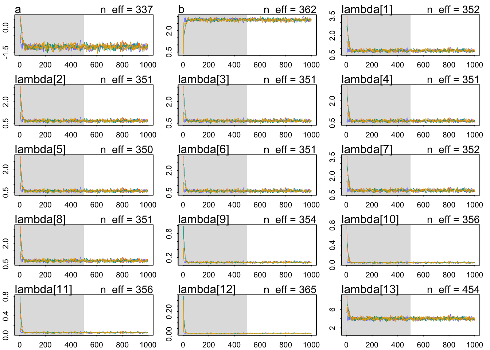
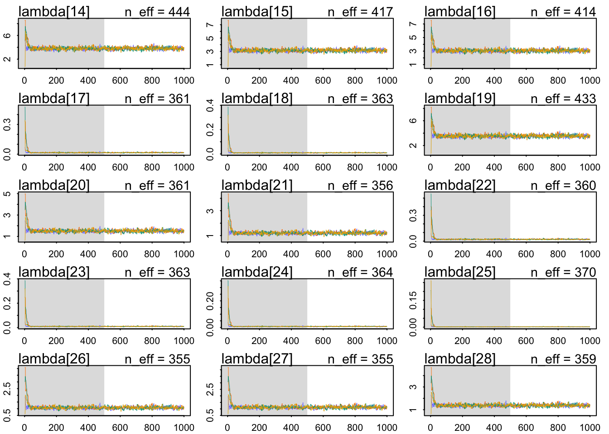
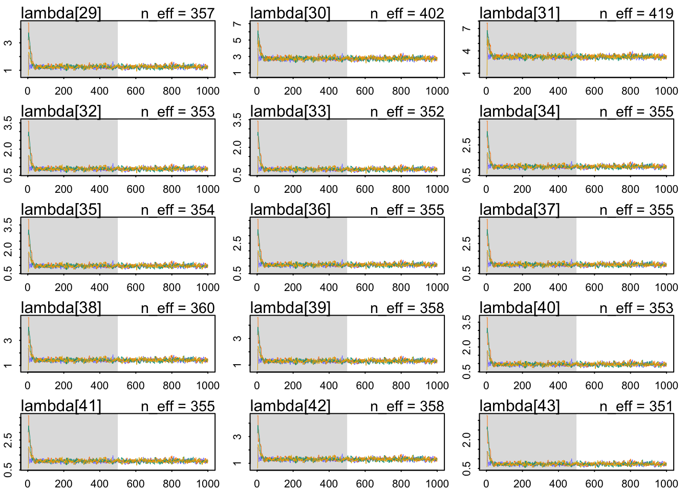
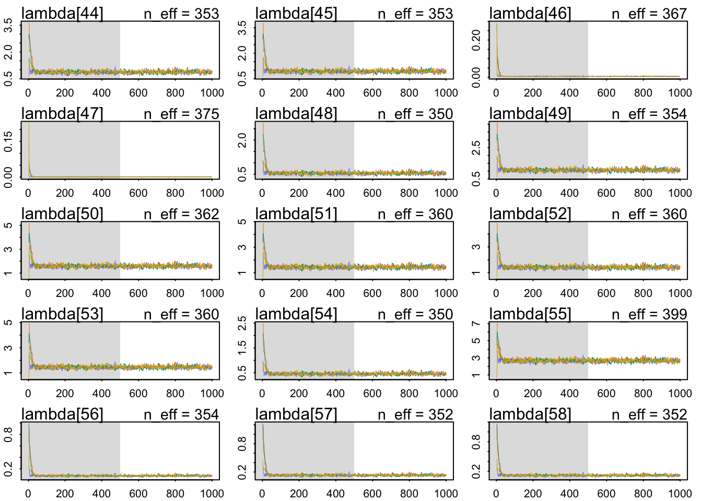
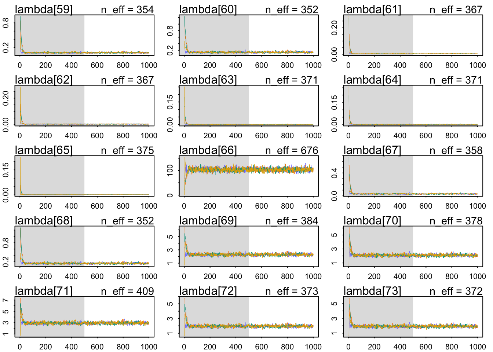
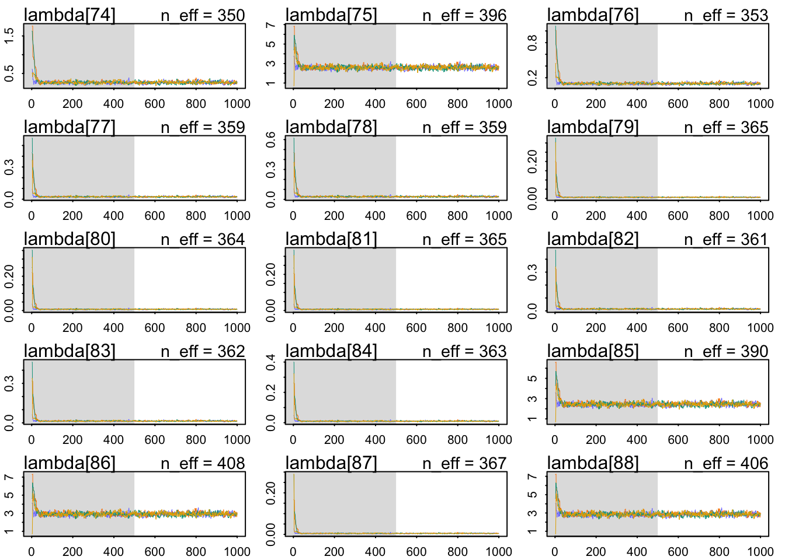
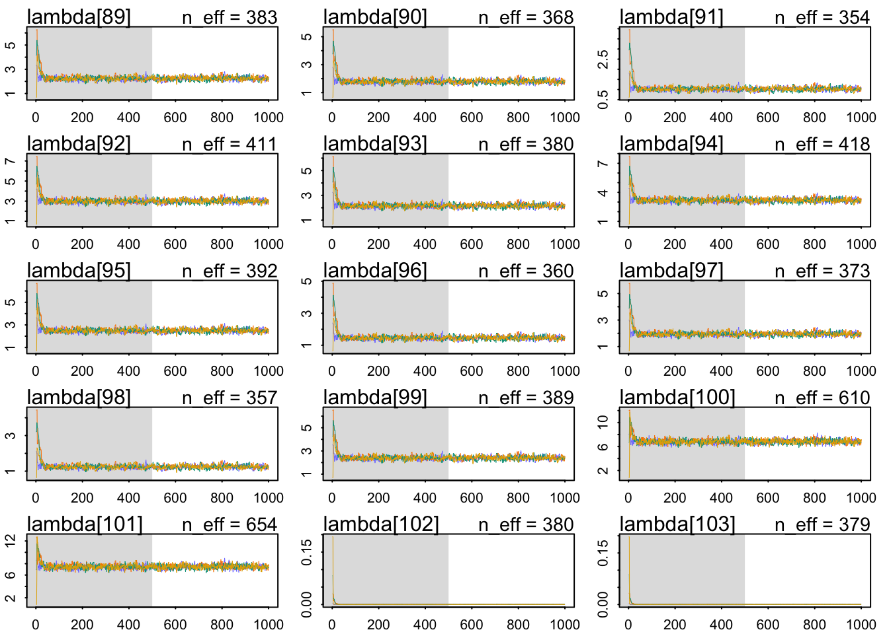
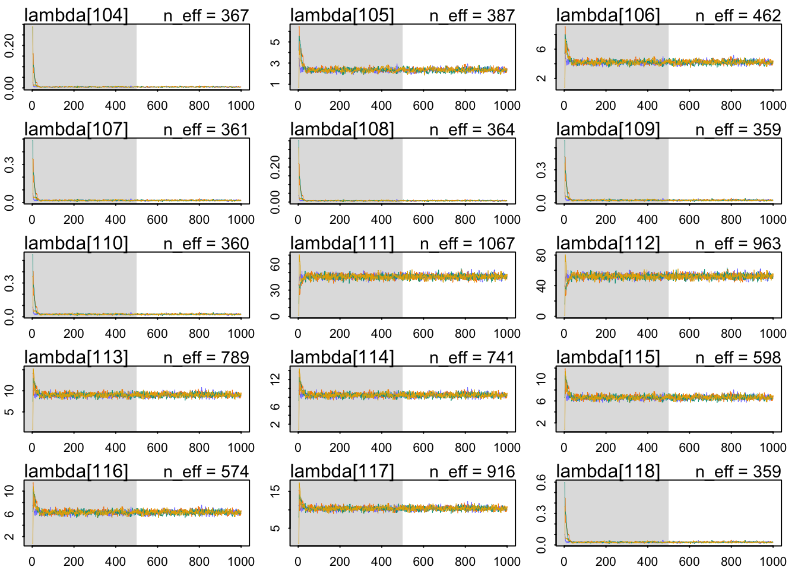
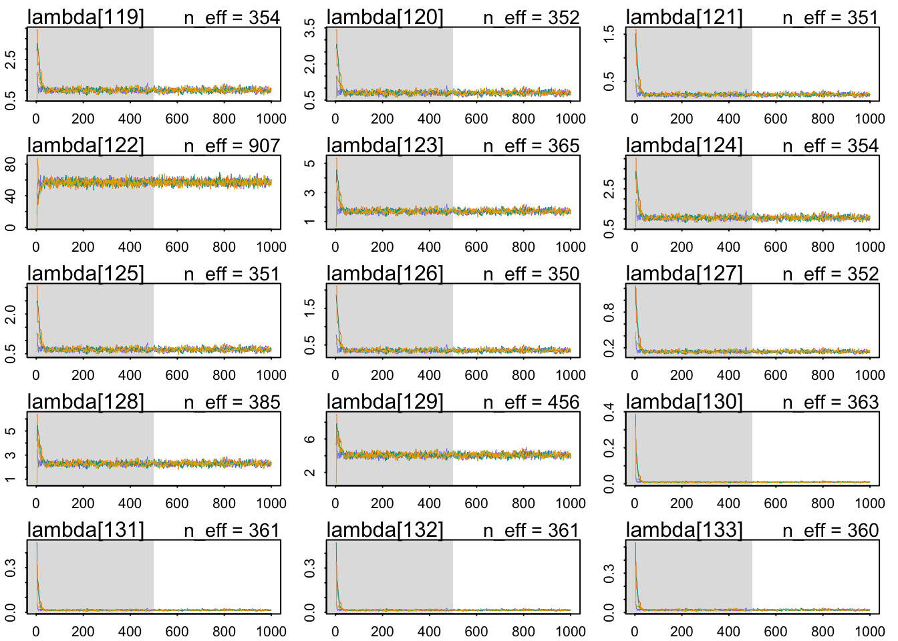
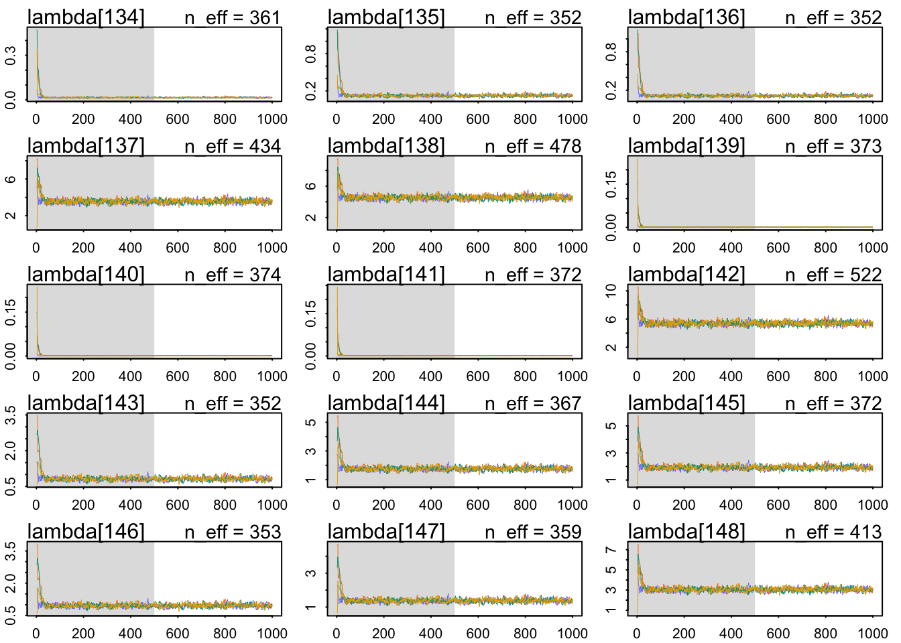
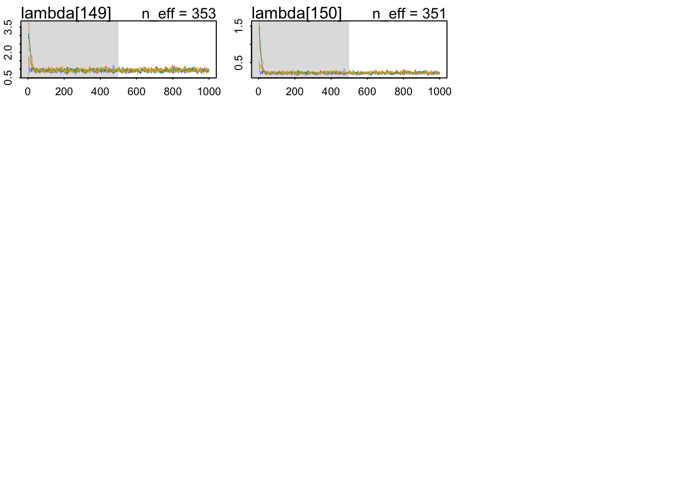
The chains look healthy:
- They are stationary.
- They mix well.
- Different chains converge to explore the same parameter space.
mean sd 5.5% 94.5% n_eff Rhat4
a -1.173153 0.12149622 -1.369680 -0.979759 337.0766 1.005123
b 2.760913 0.07808635 2.636306 2.885549 362.0357 1.005746The Rhat also looks OK. The slope seems very accurately estimating: a whole standard deviation of more brain size seems associated with around 1.98 social_learning observations. Let’s use a posterior check:
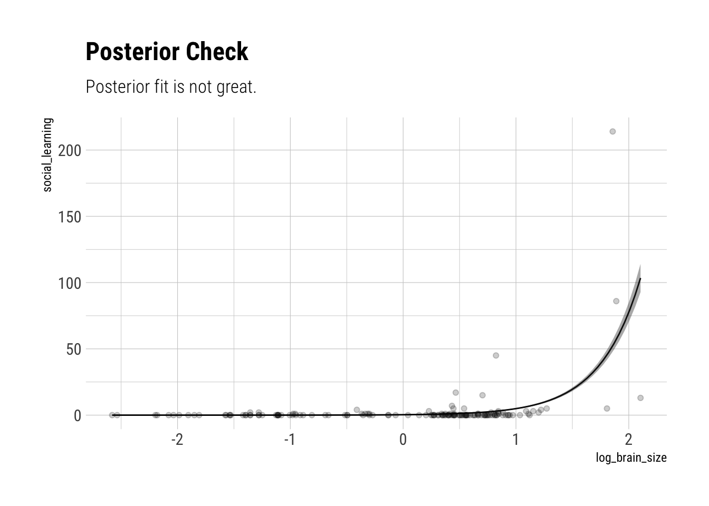
Clearly, our modelling is off. There are more factors at play here.
Second, some species are studied much more than others. So the number of reported instances of social_learning could be a product of research effort. Use the research_effort variable, specifically its logarithm, as an additional predictor variable. Interpret the coefficient for log research_effort. Does this model disagree with the previous one?
Running MCMC with 4 parallel chains, with 1 thread(s) per chain...
Chain 1 Iteration: 1 / 1000 [ 0%] (Warmup)
Chain 1 Iteration: 100 / 1000 [ 10%] (Warmup)
Chain 1 Iteration: 200 / 1000 [ 20%] (Warmup)
Chain 1 Iteration: 300 / 1000 [ 30%] (Warmup)
Chain 2 Iteration: 1 / 1000 [ 0%] (Warmup)
Chain 2 Iteration: 100 / 1000 [ 10%] (Warmup)
Chain 2 Iteration: 200 / 1000 [ 20%] (Warmup)
Chain 2 Iteration: 300 / 1000 [ 30%] (Warmup)
Chain 2 Iteration: 400 / 1000 [ 40%] (Warmup)
Chain 3 Iteration: 1 / 1000 [ 0%] (Warmup)
Chain 3 Iteration: 100 / 1000 [ 10%] (Warmup)
Chain 3 Iteration: 200 / 1000 [ 20%] (Warmup)
Chain 3 Iteration: 300 / 1000 [ 30%] (Warmup)
Chain 4 Iteration: 1 / 1000 [ 0%] (Warmup)
Chain 4 Iteration: 100 / 1000 [ 10%] (Warmup)
Chain 4 Iteration: 200 / 1000 [ 20%] (Warmup)
Chain 4 Iteration: 300 / 1000 [ 30%] (Warmup)
Chain 1 Iteration: 400 / 1000 [ 40%] (Warmup)
Chain 1 Iteration: 500 / 1000 [ 50%] (Warmup)
Chain 1 Iteration: 501 / 1000 [ 50%] (Sampling)
Chain 1 Iteration: 600 / 1000 [ 60%] (Sampling)
Chain 2 Iteration: 500 / 1000 [ 50%] (Warmup)
Chain 2 Iteration: 501 / 1000 [ 50%] (Sampling)
Chain 2 Iteration: 600 / 1000 [ 60%] (Sampling)
Chain 2 Iteration: 700 / 1000 [ 70%] (Sampling)
Chain 3 Iteration: 400 / 1000 [ 40%] (Warmup)
Chain 3 Iteration: 500 / 1000 [ 50%] (Warmup)
Chain 3 Iteration: 501 / 1000 [ 50%] (Sampling)
Chain 3 Iteration: 600 / 1000 [ 60%] (Sampling)
Chain 4 Iteration: 400 / 1000 [ 40%] (Warmup)
Chain 4 Iteration: 500 / 1000 [ 50%] (Warmup)
Chain 4 Iteration: 501 / 1000 [ 50%] (Sampling)
Chain 1 Iteration: 700 / 1000 [ 70%] (Sampling)
Chain 1 Iteration: 800 / 1000 [ 80%] (Sampling)
Chain 2 Iteration: 800 / 1000 [ 80%] (Sampling)
Chain 2 Iteration: 900 / 1000 [ 90%] (Sampling)
Chain 3 Iteration: 700 / 1000 [ 70%] (Sampling)
Chain 3 Iteration: 800 / 1000 [ 80%] (Sampling)
Chain 4 Iteration: 600 / 1000 [ 60%] (Sampling)
Chain 4 Iteration: 700 / 1000 [ 70%] (Sampling)
Chain 1 Iteration: 900 / 1000 [ 90%] (Sampling)
Chain 1 Iteration: 1000 / 1000 [100%] (Sampling)
Chain 2 Iteration: 1000 / 1000 [100%] (Sampling)
Chain 3 Iteration: 900 / 1000 [ 90%] (Sampling)
Chain 3 Iteration: 1000 / 1000 [100%] (Sampling)
Chain 4 Iteration: 800 / 1000 [ 80%] (Sampling)
Chain 4 Iteration: 900 / 1000 [ 90%] (Sampling)
Chain 4 Iteration: 1000 / 1000 [100%] (Sampling)
Chain 1 finished in 0.5 seconds.
Chain 2 finished in 0.4 seconds.
Chain 3 finished in 0.4 seconds.
Chain 4 finished in 0.4 seconds.
All 4 chains finished successfully.
Mean chain execution time: 0.4 seconds.
Total execution time: 0.5 seconds.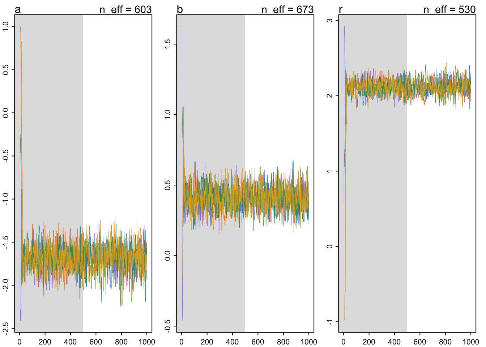
The chains look healthy:
- They are stationary.
- They mix well.
- Different chains converge to explore the same paths.
Let’s fit a longer chain:
Running MCMC with 1 chain, with 1 thread(s) per chain...
Chain 1 Iteration: 1 / 4000 [ 0%] (Warmup)
Chain 1 Iteration: 100 / 4000 [ 2%] (Warmup)
Chain 1 Iteration: 200 / 4000 [ 5%] (Warmup)
Chain 1 Iteration: 300 / 4000 [ 7%] (Warmup)
Chain 1 Iteration: 400 / 4000 [ 10%] (Warmup)
Chain 1 Iteration: 500 / 4000 [ 12%] (Warmup)
Chain 1 Iteration: 600 / 4000 [ 15%] (Warmup)
Chain 1 Iteration: 700 / 4000 [ 17%] (Warmup)
Chain 1 Iteration: 800 / 4000 [ 20%] (Warmup)
Chain 1 Iteration: 900 / 4000 [ 22%] (Warmup)
Chain 1 Iteration: 1000 / 4000 [ 25%] (Warmup)
Chain 1 Iteration: 1100 / 4000 [ 27%] (Warmup)
Chain 1 Iteration: 1200 / 4000 [ 30%] (Warmup)
Chain 1 Iteration: 1300 / 4000 [ 32%] (Warmup)
Chain 1 Iteration: 1400 / 4000 [ 35%] (Warmup)
Chain 1 Iteration: 1500 / 4000 [ 37%] (Warmup)
Chain 1 Iteration: 1600 / 4000 [ 40%] (Warmup)
Chain 1 Iteration: 1700 / 4000 [ 42%] (Warmup)
Chain 1 Iteration: 1800 / 4000 [ 45%] (Warmup)
Chain 1 Iteration: 1900 / 4000 [ 47%] (Warmup)
Chain 1 Iteration: 2000 / 4000 [ 50%] (Warmup)
Chain 1 Iteration: 2001 / 4000 [ 50%] (Sampling)
Chain 1 Iteration: 2100 / 4000 [ 52%] (Sampling)
Chain 1 Iteration: 2200 / 4000 [ 55%] (Sampling)
Chain 1 Iteration: 2300 / 4000 [ 57%] (Sampling)
Chain 1 Iteration: 2400 / 4000 [ 60%] (Sampling)
Chain 1 Iteration: 2500 / 4000 [ 62%] (Sampling)
Chain 1 Iteration: 2600 / 4000 [ 65%] (Sampling)
Chain 1 Iteration: 2700 / 4000 [ 67%] (Sampling)
Chain 1 Iteration: 2800 / 4000 [ 70%] (Sampling)
Chain 1 Iteration: 2900 / 4000 [ 72%] (Sampling)
Chain 1 Iteration: 3000 / 4000 [ 75%] (Sampling)
Chain 1 Iteration: 3100 / 4000 [ 77%] (Sampling)
Chain 1 Iteration: 3200 / 4000 [ 80%] (Sampling)
Chain 1 Iteration: 3300 / 4000 [ 82%] (Sampling)
Chain 1 Iteration: 3400 / 4000 [ 85%] (Sampling)
Chain 1 Iteration: 3500 / 4000 [ 87%] (Sampling)
Chain 1 Iteration: 3600 / 4000 [ 90%] (Sampling)
Chain 1 Iteration: 3700 / 4000 [ 92%] (Sampling)
Chain 1 Iteration: 3800 / 4000 [ 95%] (Sampling)
Chain 1 Iteration: 3900 / 4000 [ 97%] (Sampling)
Chain 1 Iteration: 4000 / 4000 [100%] (Sampling)
Chain 1 finished in 1.8 seconds. mean sd 5.5% 94.5% n_eff Rhat4
a -1.6775881 0.15234024 -1.9318421 -1.4427545 639.6881 1.0037398
b 0.4096989 0.08751584 0.2750084 0.5525733 733.6968 0.9998347
r 2.1130741 0.09568045 1.9593550 2.2640599 558.1447 1.0018470The Rhats look OK, too. Surprisingly, the log of brain size decreased quite a bit. Let’s compare the overfitting risk of both models:
WAIC SE dWAIC dSE pWAIC
model_brain_research 564.7344 175.2123 0.0000 NA 53.60439
model_only_brain 1442.7986 486.5391 878.0641 406.9318 147.12908
weight
model_brain_research 1.000000e+00
model_only_brain 2.141893e-191 PSIS SE dPSIS dSE pPSIS
model_brain_research 546.0781 161.4227 0.0000 NA 44.27621
model_only_brain 1339.1373 415.0120 793.0592 335.8656 95.29845
weight
model_brain_research 1.000000e+00
model_only_brain 6.157072e-173Both WAIC and PSIS agree: the model that incorporates the effect of research effort makes better predictions. Naturally, we are not saying that research effor influences learning; just that it influences the measurement of learning. Given that including it in the model reduced the predicted influence of brain size, it is likely that research effort is positively linked with brain size. That is, reseraches study more the primates with larger brain sizes.
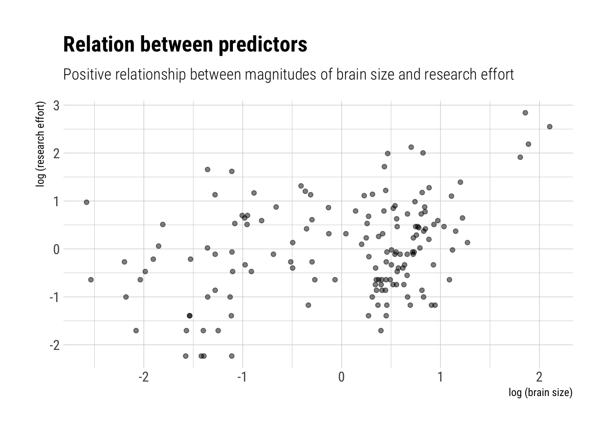
WAIC and LOOk can help us to clarify what is going on here. Essentially, a cluster of species are driving the model: the ones that highly researched. If true, the models should predict equivalent predictions out of sample for each of the observations, except the ones with high research efforts. Both LOO and WAIC give us pointwise overfitting penalties; that is, pointwise measures of where the model is having trouble predicting. If we compare these quantities, we should identify the observations that are driving the difference in predictive performance:
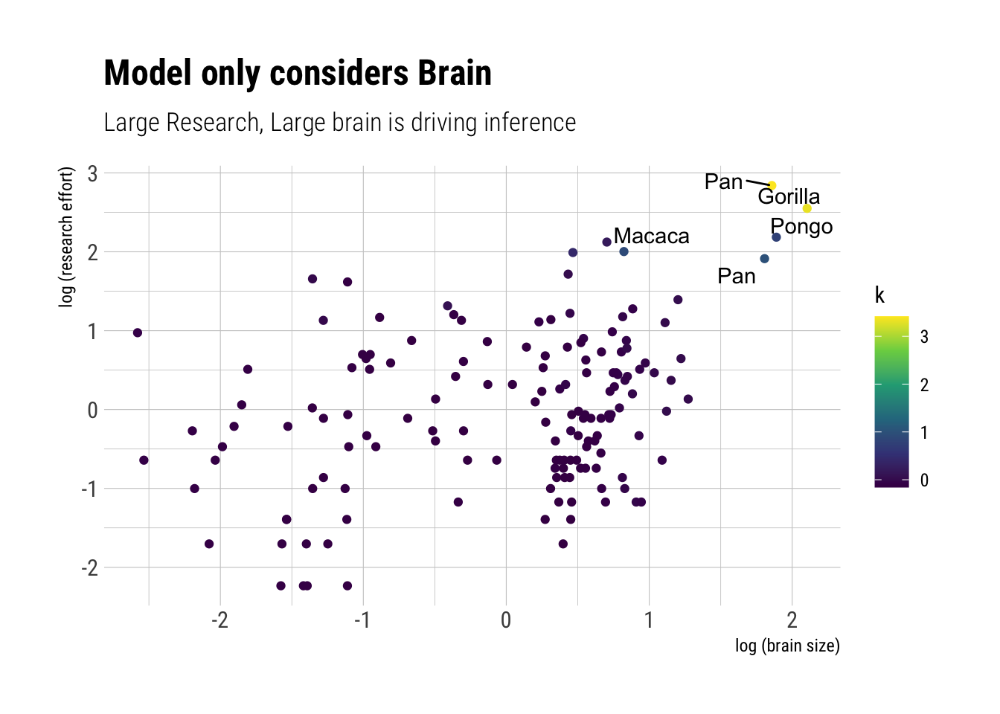
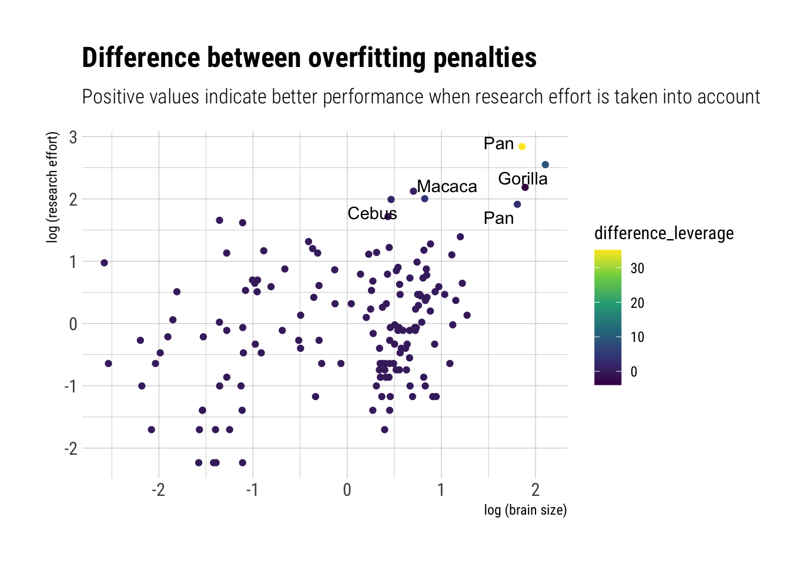
The difference in predictions, and in accuracy, is entirely driven by a couple of observations. Finally, the DAG:
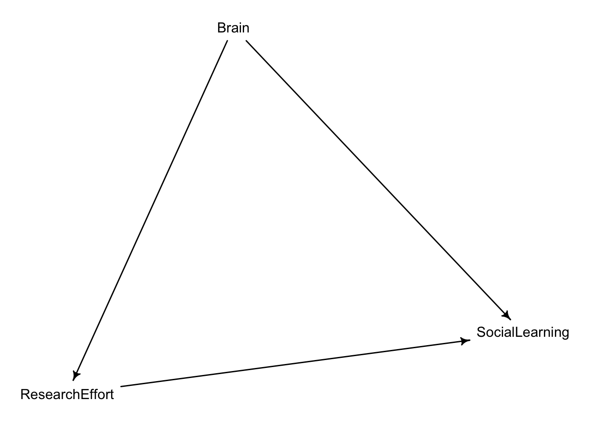